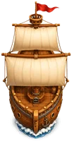
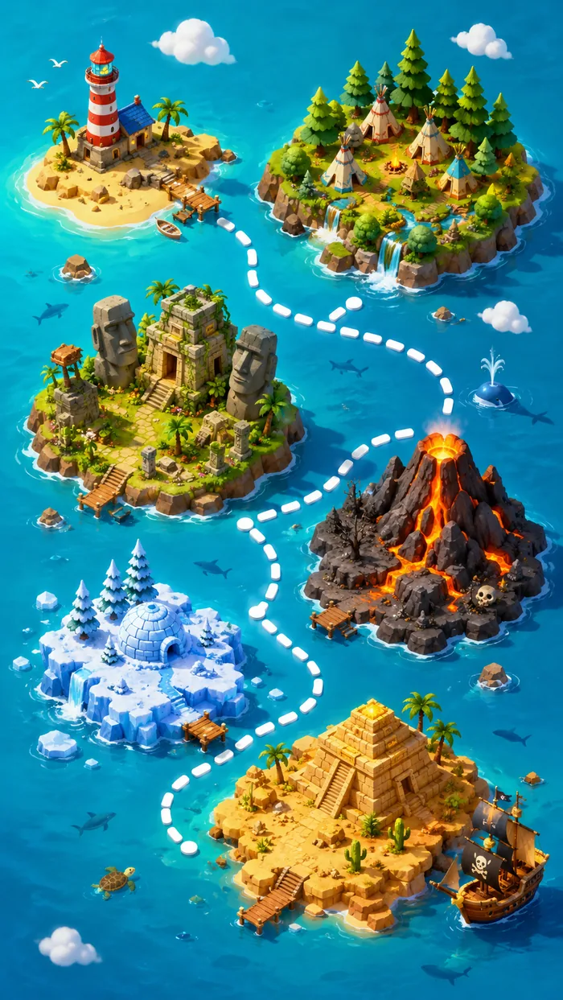

<!DOCTYPE html>
<html lang="tr">
<head>
<meta charset="UTF-8">
<meta name="viewport" content="width=device-width, initial-scale=1.0, viewport-fit=cover, maximum-scale=5.0, user-scalable=no">
<meta name="theme-color" content="#0E3D52">
<meta name="apple-mobile-web-app-capable" content="yes">
<meta name="apple-mobile-web-app-status-bar-style" content="black-translucent">
<meta name="apple-mobile-web-app-title" content="Ada Akademi">
<title>Ada'nın Yaz Akademisi — Hazine Yolculuğu</title>
<link rel="manifest" href="manifest.webmanifest">
<link rel="apple-touch-icon" href="apple-touch-icon.png">
<link rel="icon" href="favicon.png">
<link rel="preconnect" href="https://fonts.googleapis.com">
<link rel="preconnect" href="https://fonts.gstatic.com" crossorigin>
<link href="https://fonts.googleapis.com/css2?family=Baloo+2:wght@500;600;700;800&family=Nunito:wght@600;700;800&family=Pirata+One&display=swap" rel="stylesheet">
<style>
:root{
  --parsomen:#F2DFB3; --parsomen-2:#E7C98C; --parsomen-koyu:#D8B673;
  --ahsap:#5A3C24; --ahsap-2:#6E4A2C; --ahsap-koyu:#3E2817; --ahsap-acik:#8A5E38;
  --altin:#E9B949; --altin-parlak:#FFD56B; --bronz:#B07B3E;
  --deniz:#15617D; --deniz-koyu:#0E3D52; --deniz-derin:#0A2C3D; --turkuaz:#2BB6A8;
  --zumrut:#2E8B57; --mercan:#E2683C; --volkan:#C0392B; --kum:#EAD6A0;
  --mururekkep:#3A2A1A; --metin:#3A2A1A; --metin-acik:#6B5333;
  --golge:0 6px 0 rgba(62,40,23,.35); --golge-yum:0 10px 30px rgba(10,44,61,.4);
  --font-tac:'Pirata One',system-ui,cursive; --font-baslik:'Baloo 2',system-ui,sans-serif; --font-govde:'Nunito',system-ui,sans-serif;
  --doku:url("data:image/svg+xml,%3Csvg xmlns='http://www.w3.org/2000/svg' width='140' height='140'%3E%3Cfilter id='n'%3E%3CfeTurbulence type='fractalNoise' baseFrequency='0.85' numOctaves='2' stitchTiles='stitch'/%3E%3C/filter%3E%3Crect width='100%25' height='100%25' filter='url(%23n)' opacity='0.05'/%3E%3C/svg%3E");
}
*{box-sizing:border-box;-webkit-tap-highlight-color:transparent}
html,body{margin:0;padding:0;height:100%}
body{font-family:var(--font-govde);color:var(--metin);background:var(--deniz-derin);overflow:hidden;-webkit-font-smoothing:antialiased;font-weight:700}
h1,h2,h3,.baslik{font-family:var(--font-baslik);margin:0}
.tac{font-family:var(--font-tac);letter-spacing:.5px}
button{font-family:inherit;cursor:pointer;border:none;background:none;color:inherit}
.gizli{display:none!important}

/* deniz arka plan */
#deniz-bg{position:fixed;inset:0;z-index:0;background:linear-gradient(180deg,#1C6E8C 0%,#15617D 40%,#0E3D52 100%)}
#deniz-bg::before,#deniz-bg::after{content:"";position:absolute;left:-20%;right:-20%;height:60px;background:radial-gradient(ellipse at center,rgba(255,255,255,.10),transparent 60%);opacity:.5}
#deniz-bg::before{top:30%;animation:dalga 9s ease-in-out infinite}
#deniz-bg::after{top:60%;animation:dalga 11s ease-in-out infinite reverse}
@keyframes dalga{0%,100%{transform:translateX(-4%) scaleY(1)}50%{transform:translateX(4%) scaleY(1.3)}}

#app{position:relative;z-index:1;max-width:600px;margin:0 auto;height:100%;height:100dvh;overflow:hidden}
.ekran{position:absolute;inset:0;overflow-y:auto;overflow-x:hidden;padding:calc(12px + env(safe-area-inset-top)) 14px calc(96px + env(safe-area-inset-bottom));animation:bel .4s ease both;scroll-behavior:smooth}
@keyframes bel{from{opacity:0}to{opacity:1}}
.ekran.harita-ekran{padding:0}

/* parşömen panel */
.parsomen{position:relative;background:linear-gradient(160deg,var(--parsomen),var(--parsomen-2));border-radius:18px;padding:16px 18px;color:var(--metin);
  box-shadow:var(--golge),inset 0 0 30px rgba(176,123,62,.25);border:2px solid var(--parsomen-koyu);background-image:var(--doku),linear-gradient(160deg,var(--parsomen),var(--parsomen-2));margin-bottom:14px}
.parsomen::before,.parsomen::after{content:"";position:absolute;width:14px;height:14px;background:radial-gradient(circle,var(--ahsap-koyu) 40%,transparent 45%);opacity:.5}
.parsomen::before{top:8px;left:8px}.parsomen::after{top:8px;right:8px}
.panel-baslik{font-family:var(--font-baslik);font-weight:800;font-size:18px;display:flex;align-items:center;gap:9px;margin-bottom:10px;color:var(--ahsap-koyu)}

/* ahşap tabela */
.ahsap{background:repeating-linear-gradient(95deg,#6E4A2C 0 18px,#5A3C24 18px 36px);border-radius:16px;border:3px solid var(--ahsap-koyu);box-shadow:var(--golge);color:#F4E4C1;position:relative;background-image:var(--doku),repeating-linear-gradient(95deg,#6E4A2C 0 18px,#5A3C24 18px 36px)}

/* buton */
.btn{display:flex;align-items:center;justify-content:center;gap:10px;width:100%;min-height:62px;border-radius:16px;
  background:linear-gradient(180deg,var(--altin-parlak),var(--altin));color:#5A3C24;font-family:var(--font-baslik);font-weight:800;font-size:18px;
  border:2px solid #b88a2e;box-shadow:0 5px 0 #a9781f,0 8px 14px rgba(0,0,0,.25);transition:transform .1s,box-shadow .1s;text-shadow:0 1px 0 rgba(255,255,255,.4)}
.btn:active{transform:translateY(4px);box-shadow:0 1px 0 #a9781f}
.btn.deniz{background:linear-gradient(180deg,#3FC7D6,#1C8FA6);color:#04323d;border-color:#147a8e;box-shadow:0 5px 0 #126676,0 8px 14px rgba(0,0,0,.25)}
.btn.yaprak{background:linear-gradient(180deg,#52C97E,#2E8B57);color:#063019;border-color:#247447;box-shadow:0 5px 0 #1f6b41,0 8px 14px rgba(0,0,0,.25)}
.btn.mercan{background:linear-gradient(180deg,#F1885E,#E2683C);color:#3a1405;border-color:#c1551f;box-shadow:0 5px 0 #b34d1d,0 8px 14px rgba(0,0,0,.25)}
.btn.ahsapbtn{background:linear-gradient(180deg,#7A5230,#5A3C24);color:#F4E4C1;border-color:#3E2817;box-shadow:0 5px 0 #2e1d10,0 8px 14px rgba(0,0,0,.25);text-shadow:0 1px 0 rgba(0,0,0,.3)}
.btn.kucuk{min-height:50px;font-size:15px;border-radius:13px}
.btn:disabled{opacity:.75;filter:grayscale(.15)}

/* ÜST HUD */
.hud{position:sticky;top:0;z-index:20;display:flex;align-items:center;gap:8px;margin-bottom:12px}
.hud .kese{display:flex;align-items:center;gap:6px;padding:7px 13px;border-radius:999px;font-family:var(--font-baslik);font-weight:800;font-size:15px;
  background:linear-gradient(180deg,#7A5230,#5A3C24);color:#FFD56B;border:2px solid var(--ahsap-koyu);box-shadow:var(--golge)}
.hud .kese.kristal{color:#9FE8E0}
.hud .sag{margin-left:auto;display:flex;gap:8px}
.yuvarlak{width:46px;height:46px;border-radius:50%;display:grid;place-items:center;background:linear-gradient(180deg,#7A5230,#5A3C24);border:2px solid var(--ahsap-koyu);box-shadow:var(--golge);overflow:hidden}
.yuvarlak:active{transform:translateY(2px)}

/* ===== ALT NAV (halat + tahta) ===== */
.altnav{position:fixed;bottom:0;left:50%;transform:translateX(-50%);width:100%;max-width:600px;z-index:30;display:flex;justify-content:space-around;
  padding:8px 8px calc(8px + env(safe-area-inset-bottom));background:linear-gradient(180deg,#6E4A2C,#3E2817);border-top:4px solid #2a1a0e;box-shadow:0 -6px 20px rgba(0,0,0,.4)}
.altnav::before{content:"";position:absolute;top:-3px;left:0;right:0;height:6px;background:repeating-linear-gradient(90deg,#C9A24B 0 14px,#8A6A2E 14px 22px);opacity:.8}
.navbtn{display:flex;flex-direction:column;align-items:center;gap:3px;padding:6px 4px;border-radius:12px;color:#C9B08C;font-size:10px;font-weight:800;flex:1;transition:transform .15s,color .15s}
.navbtn svg{width:26px;height:26px;fill:currentColor;transition:transform .2s}
.navbtn.aktif{color:var(--altin-parlak)}
.navbtn.aktif svg{transform:translateY(-3px) scale(1.15);filter:drop-shadow(0 3px 4px rgba(0,0,0,.4))}

/* ===== HARİTA ===== */
#harita-kaydir{position:absolute;inset:0;overflow-y:auto;overflow-x:hidden;-webkit-overflow-scrolling:touch}
#harita-ic{position:relative;width:100%;}
.harita-deniz{position:absolute;inset:0;z-index:0;
  background:
    radial-gradient(ellipse 60% 8% at 20% 12%, rgba(255,255,255,.10), transparent 70%),
    radial-gradient(ellipse 46% 6% at 78% 34%, #0A6E93cc, transparent 72%),
    radial-gradient(ellipse 52% 7% at 24% 58%, #0C7FA5bb, transparent 70%),
    radial-gradient(ellipse 42% 5% at 72% 82%, rgba(255,224,150,.13), transparent 70%),
    linear-gradient(180deg,#44D5E8 0%,#28C6CF 22%,#159DB7 52%,#0C7FA5 78%,#0A6E93 100%),
    url("data:image/svg+xml,%3Csvg%20xmlns='http://www.w3.org/2000/svg'%20width='420'%20height='260'%3E%3Cpath%20d='M0%2050%20Q52%2030%20105%2050%20T210%2050%20T315%2050%20T420%2050'%20stroke='white'%20stroke-width='2.4'%20fill='none'%20opacity='0.09'/%3E%3Cpath%20d='M0%20110%20Q60%2090%20120%20110%20T240%20110%20T360%20110'%20stroke='white'%20stroke-width='1.8'%20fill='none'%20opacity='0.075'/%3E%3Cpath%20d='M0%20170%20Q45%20190%2090%20170%20T180%20170%20T270%20170%20T360%20170%20T420%20170'%20stroke='white'%20stroke-width='1.6'%20fill='none'%20opacity='0.06'/%3E%3Cpath%20d='M0%20220%20Q55%20200%20110%20220%20T220%20220%20T330%20220%20T420%20220'%20stroke='white'%20stroke-width='1.4'%20fill='none'%20opacity='0.055'/%3E%3C/svg%3E");
  background-repeat:no-repeat,no-repeat,no-repeat,no-repeat,no-repeat,repeat-y;
  background-size:100% 100%,100% 100%,100% 100%,100% 100%,100% 100%,420px 260px;
}
.harita-deniz::after{content:"";position:absolute;inset:0;pointer-events:none;mix-blend-mode:screen;
  background:repeating-linear-gradient(115deg, transparent 0 60px, rgba(255,255,255,.055) 60px 64px, transparent 64px 140px);
  background-size:220% 420px;animation:parilti 16s linear infinite}
@keyframes parilti{0%{background-position:0 0}100%{background-position:-220% 4200px}}
.bolge-etiket{position:absolute;z-index:2;pointer-events:none}
.bolge-banti{position:absolute;left:0;right:0;z-index:1;display:flex;align-items:center;justify-content:center;pointer-events:none}
.bolge-ribbon{font-family:var(--font-tac);font-size:18px;color:#F4E4C1;background:linear-gradient(180deg,rgba(58,40,23,.92),rgba(42,26,14,.92));white-space:nowrap;
  padding:6px 22px;border-radius:8px;border:2px solid var(--altin);box-shadow:0 4px 12px rgba(0,0,0,.4);text-shadow:0 2px 3px rgba(0,0,0,.5);position:relative}
.bolge-ribbon::before,.bolge-ribbon::after{content:"";position:absolute;top:50%;width:18px;height:18px;background:var(--altin);transform:translateY(-50%) rotate(45deg);border-radius:3px}
.bolge-ribbon::before{left:-9px}.bolge-ribbon::after{right:-9px}
#harita-yol{position:absolute;inset:0;z-index:2;pointer-events:none}
.yol-karinca{animation:karinca 1.6s linear infinite}
@keyframes karinca{to{stroke-dashoffset:-18}}
.ada-nokta{position:absolute;z-index:3;transform:translate(-50%,-50%);width:104px;height:104px;display:grid;place-items:center;cursor:pointer;transition:transform .15s}
.ada-nokta:active{transform:translate(-50%,-50%) scale(.9)}
.ada-nokta .rakam{position:absolute;bottom:2px;left:50%;transform:translateX(-50%);font-family:var(--font-baslik);font-weight:800;font-size:13px;color:#fff;background:rgba(10,44,61,.82);border:1.5px solid var(--altin);border-radius:999px;min-width:22px;height:22px;padding:0 6px;display:grid;place-items:center;text-shadow:0 1px 2px rgba(0,0,0,.6);z-index:5;pointer-events:none}
/* — KİLİTLİ: soluk, sisli, kilit ikonlu — */
.ada-nokta.kilitli{opacity:.7}
.ada-nokta.kilitli .ada-img{filter:drop-shadow(0 4px 5px rgba(0,0,0,.25))}
.ada-nokta.kilitli::after{content:"";position:absolute;inset:-6px;border-radius:50%;background:radial-gradient(circle,rgba(220,235,240,.34),rgba(220,235,240,.06) 68%,transparent 75%);pointer-events:none;z-index:4}
.ada-nokta.kilitli .rakam{opacity:.55}
.ada-kilit{position:absolute;top:8px;left:50%;transform:translateX(-50%);z-index:5;font-size:20px;filter:drop-shadow(0 2px 3px rgba(0,0,0,.6));pointer-events:none}
/* — TAMAMLANMIŞ: altın ışıma + nefes + parıltı — */
.ada-nokta.tamam .ada-img{filter:drop-shadow(0 5px 6px rgba(0,0,0,.35)) drop-shadow(0 0 9px rgba(255,217,90,.55))}
.ada-nokta.tamam{animation:nefes 3.4s ease-in-out infinite}
@keyframes nefes{0%,100%{transform:translate(-50%,-50%) scale(1)}50%{transform:translate(-50%,-50%) scale(1.035)}}
.pirilti{position:absolute;font-size:11px;z-index:5;pointer-events:none;animation:piriltiYanip 2.6s ease-in-out infinite;text-shadow:0 0 6px rgba(255,217,90,.9)}
.pirilti.p2{animation-delay:1.1s;font-size:9px}
@keyframes piriltiYanip{0%,100%{opacity:0;transform:scale(.5)}45%{opacity:1;transform:scale(1.15)}70%{opacity:.6}}
/* — BUGÜN: dönen altın halka + %5 büyük + nabız — */
.ada-nokta.bugun{animation:nabiz 1.8s ease-in-out infinite}
@keyframes nabiz{0%,100%{transform:translate(-50%,-50%) scale(1.05)}50%{transform:translate(-50%,-50%) scale(1.16)}}
.bugun-halka{position:absolute;width:118px;height:118px;border-radius:50%;border:3px solid var(--altin-parlak);z-index:2;transform:translate(-50%,-50%);animation:dalgalan 1.8s ease-out infinite;pointer-events:none}
@keyframes dalgalan{0%{opacity:.9;width:84px;height:84px}100%{opacity:0;width:158px;height:158px}}
.bugun-donen{position:absolute;width:130px;height:130px;border-radius:50%;z-index:2;transform:translate(-50%,-50%);pointer-events:none;
  background:conic-gradient(from 0deg, transparent 0 70%, rgba(255,217,90,.85) 82%, transparent 96%);
  -webkit-mask:radial-gradient(circle, transparent 58%, #000 60%, #000 72%, transparent 74%);
  mask:radial-gradient(circle, transparent 58%, #000 60%, #000 72%, transparent 74%);
  animation:halkaDon 3.2s linear infinite}
@keyframes halkaDon{to{transform:translate(-50%,-50%) rotate(360deg)}}
.bayrak{position:absolute;top:-2px;right:8px;width:16px;height:14px;z-index:5;transform-origin:left;animation:salla 1.4s ease-in-out infinite}
@keyframes salla{0%,100%{transform:skewX(0) scaleX(1)}50%{transform:skewX(-12deg) scaleX(.9)}}
.bulut{position:absolute;z-index:6;opacity:.85;pointer-events:none;animation:suzul linear infinite}
@keyframes suzul{from{transform:translateX(-120px)}to{transform:translateX(120vw)}}
.harita-props{position:absolute;z-index:2;pointer-events:none}
.bolge-yapi{position:absolute;z-index:1;pointer-events:none;filter:drop-shadow(0 6px 10px rgba(0,0,0,.3));transition:filter .5s}
.bolge-yapi.kilitli-bolge{opacity:.92}
.bolge-yapi.kilitli-bolge::after{content:"";position:absolute;inset:-8%;border-radius:40%;background:radial-gradient(circle,rgba(220,236,242,.22),rgba(220,236,242,.04) 70%,transparent 78%);pointer-events:none}
.bolge-yapi-img{width:128px;height:auto;display:block}
.ada-img{width:100px;height:auto;display:block;filter:drop-shadow(0 5px 6px rgba(0,0,0,.35))}
.harita-banner{position:relative;padding:14px 14px 4px;z-index:1}
.harita-banner img{width:100%;max-height:260px;object-fit:cover;object-position:50% 15%;border-radius:20px;box-shadow:var(--golge-yum);border:3px solid var(--ahsap-koyu);display:block}
.harita-banner-et{position:absolute;bottom:14px;left:28px;background:rgba(10,44,61,.78);color:#FCEFCB;padding:7px 16px;border-radius:999px;font-family:var(--font-tac);font-size:15px;border:1px solid var(--altin);text-shadow:0 1px 2px rgba(0,0,0,.5)}
.deniz-susu{position:absolute;z-index:1;pointer-events:none;opacity:.8}
.bolge-dalga{position:absolute;left:-25%;right:-25%;z-index:0;pointer-events:none}
.kus{animation:kusuc 6s ease-in-out infinite}
@keyframes kusuc{0%,100%{transform:translateY(0)}50%{transform:translateY(-7px)}}
.duman{transform-origin:bottom;animation:duman 3s ease-in-out infinite}
@keyframes duman{0%,100%{opacity:.3;transform:translateY(0) scale(1)}50%{opacity:.6;transform:translateY(-10px) scale(1.15)}}
.gemi-bob{animation:bob 3s ease-in-out infinite}
.gemi-png{z-index:4}
.gemi-png img{display:block;filter:drop-shadow(0 5px 7px rgba(0,0,0,.35));animation:gemiSalla 3.6s ease-in-out infinite;transform-origin:50% 65%}
@keyframes gemiSalla{0%,100%{transform:rotate(-2.5deg) translateY(0)}50%{transform:rotate(2.5deg) translateY(-2px)}}
.iz-kopuk{position:absolute;z-index:1;transform:translate(-50%,-50%);border-radius:50%;background:radial-gradient(circle at 40% 35%, #ffffff, #BFF0FA 60%, transparent 72%);pointer-events:none;animation:kopukSol 4s ease-in-out infinite}
@keyframes kopukSol{0%,100%{transform:translate(-50%,-50%) scale(1)}50%{transform:translate(-50%,-50%) scale(1.25)}}
@keyframes bob{0%,100%{transform:translateY(0) rotate(-2deg)}50%{transform:translateY(-6px) rotate(2deg)}}

/* harita üst başlık */
.harita-ust{position:absolute;top:0;left:0;right:0;z-index:15;display:flex;align-items:center;gap:8px;padding:calc(10px + env(safe-area-inset-top)) 12px 10px;background:linear-gradient(180deg,rgba(10,44,61,.85),transparent)}

/* ===== KAMP (ANASAYFA) ===== */
.kamp-sahne{position:relative;border-radius:20px;overflow:hidden;margin-bottom:14px;box-shadow:var(--golge-yum);border:3px solid var(--ahsap-koyu)}
.kamp-gun{position:absolute;top:12px;left:14px;z-index:3;color:#FCEFCB}
.kamp-gun .g{font-family:var(--font-tac);font-size:30px;line-height:1;text-shadow:0 2px 4px rgba(0,0,0,.5)}
.kamp-gun .t{font-weight:800;font-size:13px;opacity:.92}
.atesisik{animation:ates .4s ease-in-out infinite alternate;transform-origin:bottom}
@keyframes ates{from{transform:scaleY(1) scaleX(1)}to{transform:scaleY(1.12) scaleX(.92)}}

/* hazine çubuğu */
.hazine-bar{background:linear-gradient(180deg,#7A5230,#4A3018);border-radius:14px;padding:12px 14px;border:2px solid var(--ahsap-koyu);box-shadow:var(--golge);margin-bottom:14px;color:#FCEFCB}
.hazine-bar .ust{display:flex;align-items:center;gap:8px;font-family:var(--font-baslik);font-weight:800;font-size:15px;color:var(--altin-parlak)}
.hazine-bar .sayi{margin-left:auto}
.cubuk{height:18px;border-radius:999px;background:rgba(0,0,0,.35);overflow:hidden;margin-top:9px;border:2px solid #2e1d10}
.cubuk .dolu{height:100%;border-radius:999px;background:linear-gradient(90deg,#E9B949,#FFD56B);transition:width .7s cubic-bezier(.2,.8,.2,1);background-size:20px 20px;background-image:linear-gradient(90deg,#E9B949,#FFD56B),repeating-linear-gradient(45deg,rgba(255,255,255,.15) 0 6px,transparent 6px 12px)}
.hazine-bar .alt{font-size:12px;opacity:.85;margin-top:6px;font-weight:700}

/* dörtlü istatistik */
.dort{display:grid;grid-template-columns:repeat(4,1fr);gap:8px;margin-bottom:14px}
.dort .k{background:linear-gradient(180deg,var(--parsomen),var(--parsomen-2));border:2px solid var(--parsomen-koyu);border-radius:13px;padding:8px 4px;text-align:center;box-shadow:var(--golge)}
.dort .k .b{font-family:var(--font-baslik);font-weight:800;font-size:18px;color:var(--ahsap-koyu);display:flex;align-items:center;justify-content:center;gap:3px}
.dort .k .e{font-size:9.5px;color:var(--metin-acik);font-weight:800;margin-top:1px}

/* ===== PARŞÖMEN GÖREV ===== */
.gun-secici{display:flex;align-items:center;justify-content:space-between;gap:10px;margin-bottom:12px}
.gun-secici .ok{width:46px;height:46px;border-radius:13px;display:grid;place-items:center;background:linear-gradient(180deg,#7A5230,#5A3C24);border:2px solid var(--ahsap-koyu);box-shadow:var(--golge);color:#FCEFCB;font-size:22px;font-weight:800}
.gun-baslik{text-align:center;color:#FCEFCB}
.gun-baslik .g{font-family:var(--font-tac);font-size:22px;line-height:1}
.gun-baslik .rozet{display:inline-block;font-size:11px;font-weight:800;padding:3px 11px;border-radius:999px;background:rgba(0,0,0,.3);border:1px solid var(--altin);color:var(--altin-parlak);margin-top:3px}

.scroll{position:relative;background:linear-gradient(170deg,var(--parsomen),var(--parsomen-2));border-radius:8px;padding:14px 16px 14px 14px;margin-bottom:12px;
  border-left:7px solid var(--ders,#999);box-shadow:var(--golge),inset 0 0 24px rgba(176,123,62,.22);background-image:var(--doku),linear-gradient(170deg,var(--parsomen),var(--parsomen-2));
  display:flex;align-items:center;gap:12px;transition:opacity .4s,transform .15s}
.scroll::before{content:"";position:absolute;left:0;top:0;bottom:0;width:7px;background:var(--ders,#999);border-radius:8px 0 0 8px;box-shadow:inset -2px 0 4px rgba(0,0,0,.2)}
.scroll:active{transform:scale(.99)}
.scroll .muhur{width:48px;height:48px;border-radius:50%;flex:0 0 auto;display:grid;place-items:center;background:radial-gradient(circle at 35% 30%,color-mix(in srgb,var(--ders) 60%,#fff),var(--ders));border:2px solid rgba(0,0,0,.18);box-shadow:0 2px 5px rgba(0,0,0,.25)}
.scroll .muhur svg{width:26px;height:26px;fill:#fff;opacity:.95}
.scroll .icerik{flex:1;min-width:0}
.scroll .ders-ad{font-size:11px;font-weight:800;text-transform:uppercase;letter-spacing:.4px;color:var(--ders)}
.scroll .gorev-ad{font-family:var(--font-baslik);font-weight:700;font-size:15px;line-height:1.2;color:var(--mururekkep);margin-top:1px}
.scroll .meta{font-size:11.5px;color:var(--metin-acik);font-weight:700;margin-top:3px}
.scroll .altin-et{position:absolute;right:62px;top:10px;font-size:11px;font-weight:800;color:#8a5a00}
.scroll .tik{width:42px;height:42px;border-radius:50%;flex:0 0 auto;display:grid;place-items:center;border:3px dashed var(--bronz);color:transparent;font-size:22px;transition:all .25s;background:rgba(255,255,255,.3)}
.scroll.tamam{opacity:.7}
.scroll.tamam .gorev-ad{text-decoration:line-through;opacity:.8}
.scroll.tamam .tik{border:3px solid var(--zumrut);background:var(--zumrut);color:#fff;transform:rotate(0)}
.muhur-bas{animation:muhurbas .5s cubic-bezier(.3,1.5,.5,1)}
@keyframes muhurbas{0%{transform:scale(2) rotate(-25deg);opacity:0}60%{transform:scale(.9) rotate(5deg);opacity:1}100%{transform:scale(1) rotate(0)}}

/* ===== AVATAR ===== */
.avatar-cerceve{width:150px;height:150px;border-radius:50%;margin:0 auto;display:grid;place-items:center;position:relative;
  background:radial-gradient(circle at 50% 35%,#BFE9F0,#7FC4D6);border:5px solid var(--altin);box-shadow:var(--golge-yum),inset 0 -10px 20px rgba(0,0,0,.15)}

/* ===== KÂŞİF OLUŞTURUCU (renk/stil seçiciler) ===== */
.renk-sira{display:flex;gap:9px;flex-wrap:wrap;margin:6px 0 14px}
.renk-sira button{width:38px;height:38px;border-radius:50%;flex:0 0 auto;box-shadow:0 2px 4px rgba(0,0,0,.2);transition:transform .15s}
.renk-sira button:active{transform:scale(.85)}
.pilsira{display:flex;gap:7px;flex-wrap:wrap;margin:6px 0 14px}
.pilbtn{padding:9px 14px;border-radius:999px;background:rgba(90,60,36,.10);border:2px solid var(--parsomen-koyu);font-weight:800;font-size:12.5px;color:var(--ahsap-koyu);transition:transform .15s}
.pilbtn:active{transform:scale(.93)}
.pilbtn.aktif{background:linear-gradient(180deg,var(--altin-parlak),var(--altin));border-color:#b88a2e;color:#3a1405}

/* ===== DONANIM SANDIĞI (MAĞAZA) ===== */
.magaza-kategori{font-family:var(--font-tac);font-size:19px;color:var(--altin-parlak);margin:16px 2px 9px;text-shadow:0 2px 3px rgba(0,0,0,.4);display:flex;align-items:center;gap:8px}
.magaza-kategori:first-of-type{margin-top:4px}
.esya-grid{display:grid;grid-template-columns:1fr 1fr;gap:11px}
.esya{position:relative;background:linear-gradient(165deg,var(--parsomen),var(--parsomen-2));border:2px solid var(--parsomen-koyu);border-radius:16px;padding:13px 10px 11px;text-align:center;box-shadow:var(--golge);overflow:hidden;background-image:var(--doku),linear-gradient(165deg,var(--parsomen),var(--parsomen-2))}
.esya.sahip{box-shadow:var(--golge),0 0 0 3px var(--zumrut)}
.esya .tier{position:absolute;top:7px;right:7px;font-size:8px;font-weight:800;padding:3px 7px;border-radius:999px;color:#fff;letter-spacing:.4px;box-shadow:0 1px 3px rgba(0,0,0,.3)}
.esya .tier.bronz{background:linear-gradient(180deg,#C99359,#9C6A34)}
.esya .tier.gumus{background:linear-gradient(180deg,#C7D3DA,#8FA0AC)}
.esya .tier.altin{background:linear-gradient(180deg,#FFD56B,#C9941F)}
.esya .ikon{width:58px;height:58px;margin:6px auto 4px;filter:drop-shadow(0 3px 4px rgba(0,0,0,.25))}
.esya .ad{font-family:var(--font-baslik);font-weight:800;font-size:12.5px;color:var(--ahsap-koyu);line-height:1.18;min-height:32px;display:flex;align-items:center;justify-content:center}
.esya .fy{font-size:12px;font-weight:800;color:#1C8FA6;margin:4px 0 9px;display:flex;align-items:center;justify-content:center;gap:4px;min-height:16px}

/* ===== GANİMET (ROZET) ===== */
.ganimet-grid{display:grid;grid-template-columns:repeat(3,1fr);gap:12px}
.ganimet{background:radial-gradient(circle at 50% 30%,#7A5230,#3E2817);border:2px solid var(--ahsap-koyu);border-radius:14px;padding:12px 6px;text-align:center;box-shadow:var(--golge),inset 0 0 18px rgba(0,0,0,.4);position:relative}
.ganimet .em{width:52px;height:52px;margin:0 auto 5px;display:grid;place-items:center}
.ganimet .ad{font-size:10.5px;font-weight:800;color:#F4E4C1;line-height:1.15}
.ganimet.kilitli{filter:grayscale(.8) brightness(.5)}
.ganimet.kilitli .ad{opacity:.6}

/* ===== SEYİR DEFTERİ (İSTATİSTİK) ===== */
.defter-satir{margin-bottom:13px}
.defter-satir .tep{display:flex;justify-content:space-between;font-weight:800;font-size:13px;margin-bottom:5px;color:var(--mururekkep)}
.defter-bar{height:15px;border-radius:8px;background:rgba(62,40,23,.18);overflow:hidden;border:1px solid var(--parsomen-koyu)}
.defter-bar .d{height:100%;transition:width .7s}

/* ===== MODAL ===== */
.modal-bg{position:fixed;inset:0;background:rgba(10,30,40,.7);z-index:100;display:grid;place-items:center;padding:24px;animation:bel .25s both;backdrop-filter:blur(4px)}
.modal{position:relative;background:linear-gradient(160deg,var(--parsomen),var(--parsomen-2));border-radius:18px;padding:26px 22px;max-width:380px;width:100%;text-align:center;
  border:3px solid var(--ahsap-koyu);box-shadow:var(--golge-yum),inset 0 0 30px rgba(176,123,62,.3);background-image:var(--doku),linear-gradient(160deg,var(--parsomen),var(--parsomen-2));animation:pop .45s cubic-bezier(.2,1.4,.5,1) both}
@keyframes pop{from{transform:scale(.6) rotate(-4deg);opacity:0}to{transform:scale(1) rotate(0);opacity:1}}
.modal .big{font-size:64px;animation:zipla .7s ease}
.modal .bigsvg{width:90px;height:90px;margin:0 auto;animation:zipla .7s ease}
@keyframes zipla{0%{transform:translateY(-30px) scale(.5);opacity:0}60%{transform:translateY(6px) scale(1.1)}100%{transform:translateY(0) scale(1)}}
.modal h2{font-family:var(--font-tac);font-size:26px;margin:8px 0 6px;color:var(--ahsap-koyu)}
.modal p{color:var(--metin-acik);font-weight:700;margin:0 0 18px}
input.giris,textarea.giris{width:100%;padding:13px;border-radius:12px;border:2px solid var(--parsomen-koyu);background:rgba(255,255,255,.45);color:var(--mururekkep);font-family:inherit;font-size:16px;font-weight:700;margin-bottom:12px}
input.giris:focus,textarea.giris:focus{outline:none;border-color:var(--altin)}
textarea.giris{min-height:78px;resize:vertical}

#konfeti{position:fixed;inset:0;pointer-events:none;z-index:110}
.kp{position:absolute;width:12px;height:12px;will-change:transform}
.satir{display:flex;align-items:center;gap:10px}
.bilgi{font-size:13px;color:var(--metin-acik);font-weight:700;line-height:1.5}
.et{display:inline-block;font-size:11px;font-weight:800;padding:3px 10px;border-radius:999px;background:rgba(62,40,23,.14);color:var(--ahsap-koyu);white-space:nowrap}
.minitoast{position:fixed;bottom:104px;left:50%;transform:translateX(-50%);background:var(--ahsap-koyu);color:#FCEFCB;padding:11px 20px;border-radius:999px;font-weight:800;z-index:120;box-shadow:var(--golge-yum);border:2px solid var(--altin);animation:bel .25s}
.geri{display:inline-flex;align-items:center;gap:6px;background:rgba(0,0,0,.25);color:#FCEFCB;padding:8px 14px;border-radius:999px;font-weight:800;font-size:14px;margin-bottom:12px;border:1px solid rgba(255,255,255,.15)}
</style>
</head>
<body>
<div id="deniz-bg"></div>
<div id="app"></div>
<nav class="altnav gizli" id="altnav"></nav>
<div id="konfeti"></div>
<script>
const CURRICULUM = /*CURRICULUM_DATA*/{"meta":{"baslangic":"2026-07-01","bitis":"2026-08-31","toplamGun":62,"hazineHedefi":10000,"tabanAltin":39,"toplamGorev":255,"yapi":"8 hafta öğretim + 1 hafta tampon"},"gunler":[{"gun":1,"tarih":"2026-07-01","haftaGunu":"Çarşamba","hafta":1,"gorevler":[{"ders":"Matematik","baslik":"Büyük Doğal Sayılar + Yüzer/Biner Sayma","sayfa":12,"test":"KT-1 · KT-2","altin":40},{"ders":"Türkçe","baslik":"Eş Anlamlı Kelimeler","sayfa":14,"test":"KT-1","altin":40},{"ders":"Fen Bilimleri","baslik":"Kayaçlar","sayfa":10,"test":"KT-1","altin":40},{"ders":"Kitap Okuma","baslik":"20 dk okuma","detay":"Bugün okuduğun en ilginç karakteri anlat.","altin":40},{"ders":"Günün Görevi","baslik":"Aileden birine bugün öğrendiğini öğret.","altin":40}],"tip":"calisma"},{"gun":2,"tarih":"2026-07-02","haftaGunu":"Perşembe","hafta":1,"gorevler":[{"ders":"Matematik","baslik":"Bölük, Basamak Adları ve Basamak Değerleri","sayfa":28,"test":"KT-3","altin":40},{"ders":"Türkçe","baslik":"Zıt Anlamlı + Eş/Zıt Birlikte","sayfa":16,"test":"KT-1","altin":40},{"ders":"Sosyal Bilgiler","baslik":"Herkesin Bir Kimliği Var","sayfa":10,"test":"KT-1","altin":40},{"ders":"Kitap Okuma","baslik":"20 dk okuma","detay":"Yeni öğrendiğin 3 kelimeyi yaz, anlamlarını söyle.","altin":40},{"ders":"STEM","baslik":"STEM: Su Yoğunluğu","detay":"Tuzlu/tatlı suda yumurta yüzdürme.","altin":40},{"ders":"Günün Görevi","baslik":"Bir bulut çiz ve ona isim ver.","altin":40}],"tip":"calisma"},{"gun":3,"tarih":"2026-07-03","haftaGunu":"Cuma","hafta":1,"gorevler":[{"ders":"Matematik","baslik":"Doğal Sayıları Yuvarlama ve Sıralama","sayfa":36,"test":"KT-4 · KT-5","altin":40},{"ders":"Türkçe","baslik":"Eş Sesli (Sesteş) Kelimeler","sayfa":22,"test":"KT-2","altin":40},{"ders":"Fen Bilimleri","baslik":"Madenler","sayfa":15,"test":"KT-2","altin":40},{"ders":"Kitap Okuma","baslik":"20 dk okuma","detay":"En heyecanlı/komik bölümü babana anlat.","altin":40},{"ders":"Günün Görevi","baslik":"Bir teşekkür kartı hazırla.","altin":40}],"tip":"calisma"},{"gun":4,"tarih":"2026-07-04","haftaGunu":"Cumartesi","hafta":1,"gorevler":[{"ders":"Telafi","baslik":"Telafi Havuzu","detay":"Hafta içi eksik kalanları tamamla. Boşsa tatil!"},{"ders":"Kitap Okuma","baslik":"20 dk okuma","detay":"Okuduğun bölümün bir resmini çiz.","altin":40}],"tip":"telafi"},{"gun":5,"tarih":"2026-07-05","haftaGunu":"Pazar","hafta":1,"gorevler":[{"ders":"Kitap Okuma","baslik":"20 dk serbest okuma","detay":"O ana kadarki sonunu kendi hayalinle değiştir.","altin":40},{"ders":"Keşif","baslik":"Pazar Keşfi: Mıknatıs Avı","detay":"Evdeki eşyaları mıknatısla test et.","altin":40}],"tip":"serbest"},{"gun":6,"tarih":"2026-07-06","haftaGunu":"Pazartesi","hafta":1,"gorevler":[{"ders":"Matematik","baslik":"Sayı Örüntüleri","sayfa":48,"test":"KT-6","altin":40},{"ders":"Türkçe","baslik":"Kelimeler Arası Anlam İlişkisi","sayfa":26,"test":"—","altin":40},{"ders":"Sosyal Bilgiler","baslik":"Herkesin Bir Öyküsü Var","sayfa":16,"test":"KT-2","altin":40},{"ders":"Kitap Okuma","baslik":"20 dk okuma","detay":"Kitaba 5 üzerinden puan ver, nedenini söyle.","altin":40},{"ders":"Günün Görevi","baslik":"Yeni bir kelimeyi cümle içinde kullan.","altin":40}],"tip":"calisma"},{"gun":7,"tarih":"2026-07-07","haftaGunu":"Salı","hafta":1,"gorevler":[{"ders":"Matematik","baslik":"Doğal Sayılarla Toplama İşlemi","sayfa":54,"test":"KT-7","altin":40},{"ders":"Türkçe","baslik":"Gerçek ve Mecaz Anlamlı Kelimeler","sayfa":30,"test":"KT-3","altin":40},{"ders":"Fen Bilimleri","baslik":"Fosiller","sayfa":21,"test":"KT-3","altin":40},{"ders":"Kitap Okuma","baslik":"20 dk okuma","detay":"Karaktere bir soru sorabilseydin ne sorardın?","altin":40},{"ders":"STEM","baslik":"STEM: Gölge Saati","detay":"Güneşte çubukla gölgeyi saat saat işaretle.","altin":40},{"ders":"Günün Görevi","baslik":"Pencereden gördüğün 3 canlıyı say.","altin":40}],"tip":"calisma"},{"gun":8,"tarih":"2026-07-08","haftaGunu":"Çarşamba","hafta":2,"gorevler":[{"ders":"Matematik","baslik":"Doğal Sayılarla Çıkarma + Zihinden Çıkarma","sayfa":60,"test":"KT-8 · KT-9 · Ünite 1 Değ.","altin":40},{"ders":"Türkçe","baslik":"Terim Anlam + Gerçek/Mecaz/Terim","sayfa":35,"test":"KT-4","altin":40},{"ders":"Sosyal Bilgiler","baslik":"Nelerden Hoşlanıyorum? Neler Yapabilirim?","sayfa":22,"test":"KT-3","altin":40},{"ders":"Kitap Okuma","baslik":"20 dk okuma","detay":"Bugünkü bölümü tek cümleyle özetle.","altin":40},{"ders":"Günün Görevi","baslik":"Sevdiğin şarkının bir dizesini yaz.","altin":40}],"tip":"calisma"},{"gun":9,"tarih":"2026-07-09","haftaGunu":"Perşembe","hafta":2,"gorevler":[{"ders":"Matematik","baslik":"Toplama Tahmin + Zihinden Toplama İşlemi","sayfa":74,"test":"KT-10 · KT-11","altin":40},{"ders":"Türkçe","baslik":"Çok Anlamlılık","sayfa":44,"test":"—","altin":40},{"ders":"Fen Bilimleri","baslik":"Dünya'mızın Hareketleri","sayfa":27,"test":"KT-4 · Ünite 1 Değ.","altin":40},{"ders":"Kitap Okuma","baslik":"20 dk okuma","detay":"Bugün okuduğun en ilginç karakteri anlat.","altin":40},{"ders":"STEM","baslik":"STEM: Basit Devre","detay":"Pil-kablo-ampulle ışık yak.","altin":40},{"ders":"Günün Görevi","baslik":"Bir bilmece bul, babana sor.","altin":40}],"tip":"calisma"},{"gun":10,"tarih":"2026-07-10","haftaGunu":"Cuma","hafta":2,"gorevler":[{"ders":"Matematik","baslik":"Toplama İşlemi Problemleri","sayfa":83,"test":"KT-12","altin":40},{"ders":"Türkçe","baslik":"Dilimize Yerleşen Yabancı Kelimeler","sayfa":46,"test":"KT-5","altin":40},{"ders":"Sosyal Bilgiler","baslik":"Onun Yerinde Olsaydım + Farklılıklara Saygı","sayfa":27,"test":"KT-4 · Ünite 1 Değ.","altin":40},{"ders":"Kitap Okuma","baslik":"20 dk okuma","detay":"Yeni öğrendiğin 3 kelimeyi yaz, anlamlarını söyle.","altin":40},{"ders":"Günün Görevi","baslik":"Bugün için küçük bir hedef belirle.","altin":40}],"tip":"calisma"},{"gun":11,"tarih":"2026-07-11","haftaGunu":"Cumartesi","hafta":2,"gorevler":[{"ders":"Telafi","baslik":"Telafi Havuzu","detay":"Hafta içi eksik kalanları tamamla. Boşsa tatil!"},{"ders":"Kitap Okuma","baslik":"20 dk okuma","detay":"En heyecanlı/komik bölümü babana anlat.","altin":40}],"tip":"telafi"},{"gun":12,"tarih":"2026-07-12","haftaGunu":"Pazar","hafta":2,"gorevler":[{"ders":"Kitap Okuma","baslik":"20 dk serbest okuma","detay":"Okuduğun bölümün bir resmini çiz.","altin":40},{"ders":"Keşif","baslik":"Pazar Keşfi: Geri Dönüşüm Sanatı","detay":"Atık kutudan oyuncak/robot yap.","altin":40}],"tip":"serbest"},{"gun":13,"tarih":"2026-07-13","haftaGunu":"Pazartesi","hafta":2,"gorevler":[{"ders":"Matematik","baslik":"Farkı Tahmin + Toplama ve Çıkarma Problemleri","sayfa":89,"test":"KT-13 · KT-14 · Ünite 2 Değ.","altin":40},{"ders":"Türkçe","baslik":"Deyimler","sayfa":52,"test":"—","altin":40},{"ders":"Fen Bilimleri","baslik":"Besinler ve Özellikleri","sayfa":37,"test":"KT-5","altin":40},{"ders":"Kitap Okuma","baslik":"20 dk okuma","detay":"O ana kadarki sonunu kendi hayalinle değiştir.","altin":40},{"ders":"Günün Görevi","baslik":"Aileden birine bugün öğrendiğini öğret.","altin":40}],"tip":"calisma"},{"gun":14,"tarih":"2026-07-14","haftaGunu":"Salı","hafta":2,"gorevler":[{"ders":"Matematik","baslik":"Doğal Sayılarla Çarpma İşlemi","sayfa":106,"test":"KT-15","altin":40},{"ders":"Türkçe","baslik":"Atasözleri + Atasözleri ve Deyimler","sayfa":54,"test":"KT-6 · Tema 1 Değ.","altin":39},{"ders":"Sosyal Bilgiler","baslik":"Ailemin Tarihi","sayfa":36,"test":"KT-5","altin":39},{"ders":"Kitap Okuma","baslik":"20 dk okuma","detay":"Kitaba 5 üzerinden puan ver, nedenini söyle.","altin":39},{"ders":"STEM","baslik":"STEM: Kâğıt Köprü","detay":"Tek A4 ile en güçlü köprüyü tasarla.","altin":39},{"ders":"Günün Görevi","baslik":"Bir bulut çiz ve ona isim ver.","altin":39}],"tip":"calisma"},{"gun":15,"tarih":"2026-07-15","haftaGunu":"Çarşamba","hafta":3,"gorevler":[{"ders":"Matematik","baslik":"Kısa Yoldan + Zihinden Çarpma + Tahmin","sayfa":114,"test":"KT-16 · KT-17 · KT-18","altin":39},{"ders":"Türkçe","baslik":"Cümle Oluşturma + Olumlu/Olumsuz Cümle","sayfa":66,"test":"KT-7","altin":39},{"ders":"Fen Bilimleri","baslik":"Canlı Yaşamı ve Besin İçerikleri","sayfa":42,"test":"KT-6","altin":39},{"ders":"Kitap Okuma","baslik":"20 dk okuma","detay":"Karaktere bir soru sorabilseydin ne sorardın?","altin":39},{"ders":"Günün Görevi","baslik":"Bir teşekkür kartı hazırla.","altin":39}],"tip":"calisma"},{"gun":16,"tarih":"2026-07-16","haftaGunu":"Perşembe","hafta":3,"gorevler":[{"ders":"Matematik","baslik":"Çarpma İşlemi ile İlgili Problemler","sayfa":126,"test":"KT-19","altin":39},{"ders":"Türkçe","baslik":"Cümlede 5N1K + Geçiş/Bağlantı İfadeleri","sayfa":74,"test":"KT-8","altin":39},{"ders":"Sosyal Bilgiler","baslik":"Millî Kültür Ögelerimiz","sayfa":42,"test":"KT-6","altin":39},{"ders":"Kitap Okuma","baslik":"20 dk okuma","detay":"Bugünkü bölümü tek cümleyle özetle.","altin":39},{"ders":"STEM","baslik":"STEM: Kristal Büyütme","detay":"Tuzlu suda kristal oluşumunu gözlemle.","altin":39},{"ders":"Günün Görevi","baslik":"Yeni bir kelimeyi cümle içinde kullan.","altin":39}],"tip":"calisma"},{"gun":17,"tarih":"2026-07-17","haftaGunu":"Cuma","hafta":3,"gorevler":[{"ders":"Matematik","baslik":"Bölme İşlemi Yapalım","sayfa":134,"test":"KT-20","altin":39},{"ders":"Türkçe","baslik":"Cümle Konusu + Soru ve Ünlem Cümleleri","sayfa":82,"test":"KT-9","altin":39},{"ders":"Fen Bilimleri","baslik":"Su-Mineraller + Besinlerin Tazeliği","sayfa":47,"test":"KT-7","altin":39},{"ders":"Kitap Okuma","baslik":"20 dk okuma","detay":"Bugün okuduğun en ilginç karakteri anlat.","altin":39},{"ders":"Günün Görevi","baslik":"Pencereden gördüğün 3 canlıyı say.","altin":39}],"tip":"calisma"},{"gun":18,"tarih":"2026-07-18","haftaGunu":"Cumartesi","hafta":3,"gorevler":[{"ders":"Telafi","baslik":"Telafi Havuzu","detay":"Hafta içi eksik kalanları tamamla. Boşsa tatil!"},{"ders":"Kitap Okuma","baslik":"20 dk okuma","detay":"Yeni öğrendiğin 3 kelimeyi yaz, anlamlarını söyle.","altin":39}],"tip":"telafi"},{"gun":19,"tarih":"2026-07-19","haftaGunu":"Pazar","hafta":3,"gorevler":[{"ders":"Kitap Okuma","baslik":"20 dk serbest okuma","detay":"En heyecanlı/komik bölümü babana anlat.","altin":39},{"ders":"Keşif","baslik":"Pazar Keşfi: Mancınık","detay":"Çubuk ve lastikle mini mancınık yap.","altin":39}],"tip":"serbest"},{"gun":20,"tarih":"2026-07-20","haftaGunu":"Pazartesi","hafta":3,"gorevler":[{"ders":"Matematik","baslik":"Dört Basamaklı Doğal Sayılarla Bölme","sayfa":140,"test":"KT-21","altin":39},{"ders":"Türkçe","baslik":"Karşılaştırma ve Benzetme Cümleleri","sayfa":90,"test":"KT-10","altin":39},{"ders":"Sosyal Bilgiler","baslik":"Geçmişten Bugüne Çocuk Oyunları","sayfa":48,"test":"KT-7","altin":39},{"ders":"Kitap Okuma","baslik":"20 dk okuma","detay":"Okuduğun bölümün bir resmini çiz.","altin":39},{"ders":"Günün Görevi","baslik":"Sevdiğin şarkının bir dizesini yaz.","altin":39}],"tip":"calisma"},{"gun":21,"tarih":"2026-07-21","haftaGunu":"Salı","hafta":3,"gorevler":[{"ders":"Matematik","baslik":"Zihinden Bölme + Çarpma-Bölme İlişkisi","sayfa":144,"test":"KT-22 · KT-23","altin":39},{"ders":"Türkçe","baslik":"Örneklendirme/Tanım + Cümlede Anlam Özellikleri","sayfa":98,"test":"KT-11","altin":39},{"ders":"Fen Bilimleri","baslik":"İnsan Sağlığı ve Dengeli Beslenme","sayfa":56,"test":"KT-8","altin":39},{"ders":"Kitap Okuma","baslik":"20 dk okuma","detay":"O ana kadarki sonunu kendi hayalinle değiştir.","altin":39},{"ders":"STEM","baslik":"STEM: Yön Bulma","detay":"Pusula çiz, evdeki yönleri bul.","altin":39},{"ders":"Günün Görevi","baslik":"Bir bilmece bul, babana sor.","altin":39}],"tip":"calisma"},{"gun":22,"tarih":"2026-07-22","haftaGunu":"Çarşamba","hafta":4,"gorevler":[{"ders":"Matematik","baslik":"Bölme İşlemi ile İlgili Problemler","sayfa":157,"test":"KT-24","altin":39},{"ders":"Türkçe","baslik":"Neden-Sonuç Cümleleri","sayfa":108,"test":"KT-12 · Tema 2 Değ.","altin":39},{"ders":"Sosyal Bilgiler","baslik":"Kahramanlık Destanı: Millî Mücadele","sayfa":54,"test":"KT-8","altin":39},{"ders":"Kitap Okuma","baslik":"20 dk okuma","detay":"Kitaba 5 üzerinden puan ver, nedenini söyle.","altin":39},{"ders":"Günün Görevi","baslik":"Bugün için küçük bir hedef belirle.","altin":39}],"tip":"calisma"},{"gun":23,"tarih":"2026-07-23","haftaGunu":"Perşembe","hafta":4,"gorevler":[{"ders":"Matematik","baslik":"İfadelerin Eşitlik Durumu","sayfa":163,"test":"KT-25 · Ünite 3 Değ.","altin":39},{"ders":"Türkçe","baslik":"Büyük Harfler + Sayıların Yazılışı","sayfa":122,"test":"KT-13","altin":39},{"ders":"Fen Bilimleri","baslik":"Alkol ve Sigaranın Zararları","sayfa":62,"test":"KT-9 · Ünite 2 Değ.","altin":39},{"ders":"Kitap Okuma","baslik":"20 dk okuma","detay":"Karaktere bir soru sorabilseydin ne sorardın?","altin":39},{"ders":"STEM","baslik":"STEM: Hava İstasyonu","detay":"3 gün hava durumunu kaydet.","altin":39},{"ders":"Günün Görevi","baslik":"Aileden birine bugün öğrendiğini öğret.","altin":39}],"tip":"calisma"},{"gun":24,"tarih":"2026-07-24","haftaGunu":"Cuma","hafta":4,"gorevler":[{"ders":"Matematik","baslik":"Kesir Çeşitleri","sayfa":172,"test":"KT-26","altin":39},{"ders":"Türkçe","baslik":"Kısaltmaların + Pekiştirmelerin Yazımı","sayfa":129,"test":"KT-14","altin":39},{"ders":"Sosyal Bilgiler","baslik":"Millî Mücadele Cepheleri (Doğu/Güney/Batı)","sayfa":59,"test":"KT-9 · Ünite 2 Değ.","altin":39},{"ders":"Kitap Okuma","baslik":"20 dk okuma","detay":"Bugünkü bölümü tek cümleyle özetle.","altin":39},{"ders":"Günün Görevi","baslik":"Bir bulut çiz ve ona isim ver.","altin":39}],"tip":"calisma"},{"gun":25,"tarih":"2026-07-25","haftaGunu":"Cumartesi","hafta":4,"gorevler":[{"ders":"Telafi","baslik":"Telafi Havuzu","detay":"Hafta içi eksik kalanları tamamla. Boşsa tatil!"},{"ders":"Kitap Okuma","baslik":"20 dk okuma","detay":"Bugün okuduğun en ilginç karakteri anlat.","altin":39}],"tip":"telafi"},{"gun":26,"tarih":"2026-07-26","haftaGunu":"Pazar","hafta":4,"gorevler":[{"ders":"Kitap Okuma","baslik":"20 dk serbest okuma","detay":"Yeni öğrendiğin 3 kelimeyi yaz, anlamlarını söyle.","altin":39},{"ders":"Keşif","baslik":"Pazar Keşfi: Su Yoğunluğu","detay":"Tuzlu/tatlı suda yumurta yüzdürme.","altin":39}],"tip":"serbest"},{"gun":27,"tarih":"2026-07-27","haftaGunu":"Pazartesi","hafta":4,"gorevler":[{"ders":"Matematik","baslik":"Kesirleri Karşılaştırma + Basit Kesir Kadarı","sayfa":178,"test":"KT-27 · KT-28","altin":39},{"ders":"Türkçe","baslik":"'Mİ' / 'DE-DE' / 'Kİ-Kİ' Yazımı","sayfa":136,"test":"KT-15","altin":39},{"ders":"Fen Bilimleri","baslik":"Kuvvetin Cisimler Üzerindeki Etkileri","sayfa":72,"test":"KT-10","altin":39},{"ders":"Kitap Okuma","baslik":"20 dk okuma","detay":"En heyecanlı/komik bölümü babana anlat.","altin":39},{"ders":"Günün Görevi","baslik":"Bir teşekkür kartı hazırla.","altin":39}],"tip":"calisma"},{"gun":28,"tarih":"2026-07-28","haftaGunu":"Salı","hafta":4,"gorevler":[{"ders":"Matematik","baslik":"Kesirlerle Toplama ve Çıkarma İşlemi","sayfa":189,"test":"KT-29","altin":39},{"ders":"Türkçe","baslik":"Eklerin + Yazımı Karıştırılan Kelimeler","sayfa":143,"test":"KT-16 · Tema 3 Değ.","altin":39},{"ders":"Sosyal Bilgiler","baslik":"Yönlerimiz","sayfa":74,"test":"KT-10","altin":39},{"ders":"Kitap Okuma","baslik":"20 dk okuma","detay":"Okuduğun bölümün bir resmini çiz.","altin":39},{"ders":"STEM","baslik":"STEM: Mıknatıs Avı","detay":"Evdeki eşyaları mıknatısla test et.","altin":39},{"ders":"Günün Görevi","baslik":"Yeni bir kelimeyi cümle içinde kullan.","altin":39}],"tip":"calisma"},{"gun":29,"tarih":"2026-07-29","haftaGunu":"Çarşamba","hafta":5,"gorevler":[{"ders":"Matematik","baslik":"Kesir Problemleri","sayfa":195,"test":"KT-30","altin":39},{"ders":"Türkçe","baslik":"Noktalama İşaretleri","sayfa":162,"test":"KT-17","altin":39},{"ders":"Fen Bilimleri","baslik":"Mıknatıslar: Özellikleri ve Kullanımı","sayfa":80,"test":"KT-11 · KT-12 · Ünite 3 Değ.","altin":39},{"ders":"Kitap Okuma","baslik":"20 dk okuma","detay":"O ana kadarki sonunu kendi hayalinle değiştir.","altin":39},{"ders":"Günün Görevi","baslik":"Pencereden gördüğün 3 canlıyı say.","altin":39}],"tip":"calisma"},{"gun":30,"tarih":"2026-07-30","haftaGunu":"Perşembe","hafta":5,"gorevler":[{"ders":"Matematik","baslik":"Zaman Ölçüsü Dönüşümleri ve Problemleri","sayfa":201,"test":"KT-31 · KT-32","altin":39},{"ders":"Türkçe","baslik":"Kısa Çizgi, İki Nokta, Kesme, Uzun Çizgi","sayfa":170,"test":"KT-18","altin":39},{"ders":"Sosyal Bilgiler","baslik":"Yer Tarifi Yapalım","sayfa":80,"test":"KT-11","altin":39},{"ders":"Kitap Okuma","baslik":"20 dk okuma","detay":"Kitaba 5 üzerinden puan ver, nedenini söyle.","altin":39},{"ders":"STEM","baslik":"STEM: Gölge Saati","detay":"Güneşte çubukla gölgeyi saat saat işaretle.","altin":39},{"ders":"Günün Görevi","baslik":"Sevdiğin şarkının bir dizesini yaz.","altin":39}],"tip":"calisma"},{"gun":31,"tarih":"2026-07-31","haftaGunu":"Cuma","hafta":5,"gorevler":[{"ders":"Matematik","baslik":"Sütun Grafiğini Yorumlama ve Oluşturma","sayfa":213,"test":"KT-33 · KT-34","altin":39},{"ders":"Türkçe","baslik":"Eğik Çizgi, Üç Nokta, Yay Ayraç","sayfa":178,"test":"KT-19 · KT-20 · Tema 4 Değ.","altin":39},{"ders":"Fen Bilimleri","baslik":"Maddeyi Niteleyen + Ölçülebilir Özellikler (Kütle/Hacim)","sayfa":98,"test":"KT-13 · KT-14 · KT-15","altin":39},{"ders":"Kitap Okuma","baslik":"20 dk okuma","detay":"Karaktere bir soru sorabilseydin ne sorardın?","altin":39},{"ders":"Günün Görevi","baslik":"Bir bilmece bul, babana sor.","altin":39}],"tip":"calisma"},{"gun":32,"tarih":"2026-08-01","haftaGunu":"Cumartesi","hafta":5,"gorevler":[{"ders":"Telafi","baslik":"Telafi Havuzu","detay":"Hafta içi eksik kalanları tamamla. Boşsa tatil!"},{"ders":"Kitap Okuma","baslik":"20 dk okuma","detay":"Bugünkü bölümü tek cümleyle özetle.","altin":39}],"tip":"telafi"},{"gun":33,"tarih":"2026-08-02","haftaGunu":"Pazar","hafta":5,"gorevler":[{"ders":"Kitap Okuma","baslik":"20 dk serbest okuma","detay":"Bugün okuduğun en ilginç karakteri anlat.","altin":39},{"ders":"Keşif","baslik":"Pazar Keşfi: Basit Devre","detay":"Pil-kablo-ampulle ışık yak.","altin":39}],"tip":"serbest"},{"gun":34,"tarih":"2026-08-03","haftaGunu":"Pazartesi","hafta":5,"gorevler":[{"ders":"Matematik","baslik":"Verilerin Gösterimi + Veri Toplama/Analiz","sayfa":224,"test":"KT-35 · KT-36 · Ünite 4 Değ.","altin":39},{"ders":"Türkçe","baslik":"Metin Bölümleri + Oluş Sırası","sayfa":198,"test":"KT-21","altin":39},{"ders":"Sosyal Bilgiler","baslik":"Çevremizde Neler Var? + Hava Durumu","sayfa":84,"test":"KT-12 · KT-13","altin":39},{"ders":"Kitap Okuma","baslik":"20 dk okuma","detay":"Yeni öğrendiğin 3 kelimeyi yaz, anlamlarını söyle.","altin":39},{"ders":"Günün Görevi","baslik":"Bugün için küçük bir hedef belirle.","altin":39}],"tip":"calisma"},{"gun":35,"tarih":"2026-08-04","haftaGunu":"Salı","hafta":5,"gorevler":[{"ders":"Matematik","baslik":"Üçgen, Kare, Dikdörtgenin Kenar/Köşeleri","sayfa":238,"test":"KT-37","altin":39},{"ders":"Türkçe","baslik":"Metinde 5N1K","sayfa":208,"test":"KT-22","altin":39},{"ders":"Fen Bilimleri","baslik":"Maddenin Hâlleri","sayfa":116,"test":"KT-16","altin":39},{"ders":"Kitap Okuma","baslik":"20 dk okuma","detay":"En heyecanlı/komik bölümü babana anlat.","altin":39},{"ders":"STEM","baslik":"STEM: Geri Dönüşüm Sanatı","detay":"Atık kutudan oyuncak/robot yap.","altin":39},{"ders":"Günün Görevi","baslik":"Aileden birine bugün öğrendiğini öğret.","altin":39}],"tip":"calisma"},{"gun":36,"tarih":"2026-08-05","haftaGunu":"Çarşamba","hafta":6,"gorevler":[{"ders":"Matematik","baslik":"Kare-Dikdörtgen Özellikleri + Üçgen Çeşitleri","sayfa":243,"test":"KT-38","altin":39},{"ders":"Türkçe","baslik":"Metnin Konusu + Başlık Belirleme","sayfa":214,"test":"KT-23","altin":39},{"ders":"Sosyal Bilgiler","baslik":"Yaşadığım Yer","sayfa":94,"test":"KT-14","altin":39},{"ders":"Kitap Okuma","baslik":"20 dk okuma","detay":"Okuduğun bölümün bir resmini çiz.","altin":39},{"ders":"Günün Görevi","baslik":"Bir bulut çiz ve ona isim ver.","altin":39}],"tip":"calisma"},{"gun":37,"tarih":"2026-08-06","haftaGunu":"Perşembe","hafta":6,"gorevler":[{"ders":"Matematik","baslik":"Küp ve Geometrik Cisimler","sayfa":249,"test":"KT-39","altin":39},{"ders":"Türkçe","baslik":"Ana Fikir","sayfa":224,"test":"KT-24","altin":39},{"ders":"Fen Bilimleri","baslik":"Maddenin Isı Etkisiyle Değişimi","sayfa":122,"test":"KT-17 · KT-18","altin":39},{"ders":"Kitap Okuma","baslik":"20 dk okuma","detay":"O ana kadarki sonunu kendi hayalinle değiştir.","altin":39},{"ders":"STEM","baslik":"STEM: Kâğıt Köprü","detay":"Tek A4 ile en güçlü köprüyü tasarla.","altin":39},{"ders":"Günün Görevi","baslik":"Bir teşekkür kartı hazırla.","altin":39}],"tip":"calisma"},{"gun":38,"tarih":"2026-08-07","haftaGunu":"Cuma","hafta":6,"gorevler":[{"ders":"Matematik","baslik":"Düzlem + Açıların İsimlendirilmesi","sayfa":255,"test":"KT-40","altin":39},{"ders":"Türkçe","baslik":"Şiirde Konu - Ana Duygu","sayfa":230,"test":"KT-25 · Tema 5 Değ.","altin":39},{"ders":"Sosyal Bilgiler","baslik":"Doğal Afetlere Hazır Olalım","sayfa":99,"test":"KT-15 · Ünite 3 Değ.","altin":39},{"ders":"Kitap Okuma","baslik":"20 dk okuma","detay":"Kitaba 5 üzerinden puan ver, nedenini söyle.","altin":39},{"ders":"Günün Görevi","baslik":"Yeni bir kelimeyi cümle içinde kullan.","altin":39}],"tip":"calisma"},{"gun":39,"tarih":"2026-08-08","haftaGunu":"Cumartesi","hafta":6,"gorevler":[{"ders":"Telafi","baslik":"Telafi Havuzu","detay":"Hafta içi eksik kalanları tamamla. Boşsa tatil!"},{"ders":"Kitap Okuma","baslik":"20 dk okuma","detay":"Karaktere bir soru sorabilseydin ne sorardın?","altin":39}],"tip":"telafi"},{"gun":40,"tarih":"2026-08-09","haftaGunu":"Pazar","hafta":6,"gorevler":[{"ders":"Kitap Okuma","baslik":"20 dk serbest okuma","detay":"Bugünkü bölümü tek cümleyle özetle.","altin":39},{"ders":"Keşif","baslik":"Pazar Keşfi: Kristal Büyütme","detay":"Tuzlu suda kristal oluşumunu gözlemle.","altin":39}],"tip":"serbest"},{"gun":41,"tarih":"2026-08-10","haftaGunu":"Pazartesi","hafta":6,"gorevler":[{"ders":"Matematik","baslik":"Açı Çeşitleri + Standart Olmayan Açı Ölçme","sayfa":260,"test":"KT-41","altin":39},{"ders":"Türkçe","baslik":"Hayali Unsur + Anlatım Biçimleri","sayfa":244,"test":"KT-26","altin":39},{"ders":"Fen Bilimleri","baslik":"Saf Madde ve Karışım + Ayrılması","sayfa":134,"test":"KT-19 · KT-20 · KT-21 · Ünite 4 Değ.","altin":39},{"ders":"Kitap Okuma","baslik":"20 dk okuma","detay":"Bugün okuduğun en ilginç karakteri anlat.","altin":39},{"ders":"Günün Görevi","baslik":"Pencereden gördüğün 3 canlıyı say.","altin":39}],"tip":"calisma"},{"gun":42,"tarih":"2026-08-11","haftaGunu":"Salı","hafta":6,"gorevler":[{"ders":"Matematik","baslik":"Ölçüsü Verilen Açıyı Ölçme","sayfa":266,"test":"KT-42","altin":39},{"ders":"Türkçe","baslik":"Hikâye Unsurları + Paragraf Tamamlama","sayfa":252,"test":"KT-27 · KT-28","altin":39},{"ders":"Sosyal Bilgiler","baslik":"Teknolojik Ürünler + Geçmişten Bugüne Teknoloji","sayfa":114,"test":"KT-16 · KT-17","altin":39},{"ders":"Kitap Okuma","baslik":"20 dk okuma","detay":"Yeni öğrendiğin 3 kelimeyi yaz, anlamlarını söyle.","altin":39},{"ders":"STEM","baslik":"STEM: Mancınık","detay":"Çubuk ve lastikle mini mancınık yap.","altin":39},{"ders":"Günün Görevi","baslik":"Sevdiğin şarkının bir dizesini yaz.","altin":39}],"tip":"calisma"},{"gun":43,"tarih":"2026-08-12","haftaGunu":"Çarşamba","hafta":7,"gorevler":[{"ders":"Matematik","baslik":"Simetri","sayfa":270,"test":"KT-43","altin":39},{"ders":"Türkçe","baslik":"Metinden Çıkarım Yapma","sayfa":266,"test":"KT-29","altin":39},{"ders":"Fen Bilimleri","baslik":"Aydınlatma Teknolojileri + Işık Kirliliği","sayfa":154,"test":"KT-22 · KT-23 · KT-24 · KT-25","altin":39},{"ders":"Kitap Okuma","baslik":"20 dk okuma","detay":"En heyecanlı/komik bölümü babana anlat.","altin":39},{"ders":"Günün Görevi","baslik":"Bir bilmece bul, babana sor.","altin":39}],"tip":"calisma"},{"gun":44,"tarih":"2026-08-13","haftaGunu":"Perşembe","hafta":7,"gorevler":[{"ders":"Matematik","baslik":"Uzunluk Ölçü Birimleri + Milimetre","sayfa":276,"test":"KT-44","altin":39},{"ders":"Türkçe","baslik":"Anlam Akışını Bozan Cümle","sayfa":272,"test":"KT-30 · Tema 6 Değ.","altin":39},{"ders":"Sosyal Bilgiler","baslik":"İcat Çıkaralım - Zarar Vermeden Kullanalım","sayfa":122,"test":"KT-18 · Ünite 4 Değ.","altin":39},{"ders":"Kitap Okuma","baslik":"20 dk okuma","detay":"Okuduğun bölümün bir resmini çiz.","altin":39},{"ders":"STEM","baslik":"STEM: Yön Bulma","detay":"Pusula çiz, evdeki yönleri bul.","altin":39},{"ders":"Günün Görevi","baslik":"Bugün için küçük bir hedef belirle.","altin":39}],"tip":"calisma"},{"gun":45,"tarih":"2026-08-14","haftaGunu":"Cuma","hafta":7,"gorevler":[{"ders":"Matematik","baslik":"Uzunluğu Tahmin + Uzunluk Ölçme Problemleri","sayfa":282,"test":"KT-45 · Ünite 5 Değ.","altin":39},{"ders":"Türkçe","baslik":"İsim Türleri","sayfa":286,"test":"KT-31","altin":39},{"ders":"Fen Bilimleri","baslik":"Ses Teknolojileri + Şiddetli Ses","sayfa":174,"test":"KT-26 · KT-27","altin":39},{"ders":"Kitap Okuma","baslik":"20 dk okuma","detay":"O ana kadarki sonunu kendi hayalinle değiştir.","altin":39},{"ders":"Günün Görevi","baslik":"Aileden birine bugün öğrendiğini öğret.","altin":39}],"tip":"calisma"},{"gun":46,"tarih":"2026-08-15","haftaGunu":"Cumartesi","hafta":7,"gorevler":[{"ders":"Telafi","baslik":"Telafi Havuzu","detay":"Hafta içi eksik kalanları tamamla. Boşsa tatil!"},{"ders":"Kitap Okuma","baslik":"20 dk okuma","detay":"Kitaba 5 üzerinden puan ver, nedenini söyle.","altin":39}],"tip":"telafi"},{"gun":47,"tarih":"2026-08-16","haftaGunu":"Pazar","hafta":7,"gorevler":[{"ders":"Kitap Okuma","baslik":"20 dk serbest okuma","detay":"Karaktere bir soru sorabilseydin ne sorardın?","altin":39},{"ders":"Keşif","baslik":"Pazar Keşfi: Hava İstasyonu","detay":"3 gün hava durumunu kaydet.","altin":39}],"tip":"serbest"},{"gun":48,"tarih":"2026-08-17","haftaGunu":"Pazartesi","hafta":7,"gorevler":[{"ders":"Matematik","baslik":"Kare ve Dikdörtgenin Çevresi","sayfa":294,"test":"KT-46","altin":39},{"ders":"Türkçe","baslik":"Ön Adlar + Adıllar","sayfa":298,"test":"KT-32","altin":39},{"ders":"Sosyal Bilgiler","baslik":"İstek/İhtiyaçlar + Ekonomik Faaliyetler","sayfa":136,"test":"KT-19 · KT-20","altin":39},{"ders":"Kitap Okuma","baslik":"20 dk okuma","detay":"Bugünkü bölümü tek cümleyle özetle.","altin":39},{"ders":"Günün Görevi","baslik":"Bir bulut çiz ve ona isim ver.","altin":39}],"tip":"calisma"},{"gun":49,"tarih":"2026-08-18","haftaGunu":"Salı","hafta":7,"gorevler":[{"ders":"Matematik","baslik":"Çevre Problemleri","sayfa":306,"test":"KT-47 · KT-48","altin":39},{"ders":"Türkçe","baslik":"Eylemler + Ön Ad, Adıl ve Eylem","sayfa":308,"test":"KT-33 · Tema 7 Değ.","altin":39},{"ders":"Fen Bilimleri","baslik":"Ses Kirliliği ve Çözümleri","sayfa":184,"test":"KT-28 · KT-29 · Ünite 5 Değ.","altin":39},{"ders":"Kitap Okuma","baslik":"20 dk okuma","detay":"Bugün okuduğun en ilginç karakteri anlat.","altin":39},{"ders":"STEM","baslik":"STEM: Su Yoğunluğu","detay":"Tuzlu/tatlı suda yumurta yüzdürme.","altin":39},{"ders":"Günün Görevi","baslik":"Bir teşekkür kartı hazırla.","altin":39}],"tip":"calisma"},{"gun":50,"tarih":"2026-08-19","haftaGunu":"Çarşamba","hafta":8,"gorevler":[{"ders":"Matematik","baslik":"Alan: Birimkare + Dikdörtgen/Kare Alanı","sayfa":312,"test":"KT-49 · KT-50","altin":39},{"ders":"Türkçe","baslik":"Pekiştirme: Tema Değ. / Beceri Temelli Sorular","detay":"Türkçe konularını tekrar et, eksik testleri çöz.","altin":39},{"ders":"Sosyal Bilgiler","baslik":"Bilinçli Tüketici + İsrafa Hayır","sayfa":147,"test":"KT-21 · KT-22 · Ünite 5 Değ.","altin":39},{"ders":"Kitap Okuma","baslik":"20 dk okuma","detay":"Yeni öğrendiğin 3 kelimeyi yaz, anlamlarını söyle.","altin":39},{"ders":"Günün Görevi","baslik":"Yeni bir kelimeyi cümle içinde kullan.","altin":39}],"tip":"calisma"},{"gun":51,"tarih":"2026-08-20","haftaGunu":"Perşembe","hafta":8,"gorevler":[{"ders":"Matematik","baslik":"Kilogramdan Grama + Tartma","sayfa":322,"test":"KT-51 · KT-52","altin":39},{"ders":"Türkçe","baslik":"Pekiştirme: Tema Değ. / Beceri Temelli Sorular","detay":"Türkçe konularını tekrar et, eksik testleri çöz.","altin":39},{"ders":"Fen Bilimleri","baslik":"Bilinçli Tüketici + Geri Dönüşüm","sayfa":198,"test":"KT-30 · KT-31 · Ünite 6 Değ.","altin":39},{"ders":"Kitap Okuma","baslik":"20 dk okuma","detay":"En heyecanlı/komik bölümü babana anlat.","altin":39},{"ders":"STEM","baslik":"STEM: Mıknatıs Avı","detay":"Evdeki eşyaları mıknatısla test et.","altin":39},{"ders":"Günün Görevi","baslik":"Pencereden gördüğün 3 canlıyı say.","altin":39}],"tip":"calisma"},{"gun":52,"tarih":"2026-08-21","haftaGunu":"Cuma","hafta":8,"gorevler":[{"ders":"Matematik","baslik":"Ton-Kg-Gram-Mg + Tartma Problemleri","sayfa":330,"test":"KT-53 · KT-54","altin":39},{"ders":"Türkçe","baslik":"Pekiştirme: Tema Değ. / Beceri Temelli Sorular","detay":"Türkçe konularını tekrar et, eksik testleri çöz.","altin":39},{"ders":"Sosyal Bilgiler","baslik":"Çocuk Hakları + Sorumluluk + Özgürlük","sayfa":164,"test":"KT-23 · KT-24 · KT-25 · KT-26 · Ünite 6 Değ.","altin":39},{"ders":"Kitap Okuma","baslik":"20 dk okuma","detay":"Okuduğun bölümün bir resmini çiz.","altin":39},{"ders":"Günün Görevi","baslik":"Sevdiğin şarkının bir dizesini yaz.","altin":39}],"tip":"calisma"},{"gun":53,"tarih":"2026-08-22","haftaGunu":"Cumartesi","hafta":8,"gorevler":[{"ders":"Telafi","baslik":"Telafi Havuzu","detay":"Hafta içi eksik kalanları tamamla. Boşsa tatil!"},{"ders":"Kitap Okuma","baslik":"20 dk okuma","detay":"O ana kadarki sonunu kendi hayalinle değiştir.","altin":39}],"tip":"telafi"},{"gun":54,"tarih":"2026-08-23","haftaGunu":"Pazar","hafta":8,"gorevler":[{"ders":"Kitap Okuma","baslik":"20 dk serbest okuma","detay":"Kitaba 5 üzerinden puan ver, nedenini söyle.","altin":39},{"ders":"Keşif","baslik":"Pazar Keşfi: Gölge Saati","detay":"Güneşte çubukla gölgeyi saat saat işaretle.","altin":39}],"tip":"serbest"},{"gun":55,"tarih":"2026-08-24","haftaGunu":"Pazartesi","hafta":8,"gorevler":[{"ders":"Matematik","baslik":"Mililitre + Litre-Mililitre İlişkisi","sayfa":342,"test":"KT-55","altin":39},{"ders":"Türkçe","baslik":"Pekiştirme: Tema Değ. / Beceri Temelli Sorular","detay":"Türkçe konularını tekrar et, eksik testleri çöz.","altin":39},{"ders":"Fen Bilimleri","baslik":"Basit Elektrik Devreleri + Devre Elemanları","sayfa":214,"test":"KT-32 · KT-33 · KT-34 · Ünite 7 Değ.","altin":39},{"ders":"Kitap Okuma","baslik":"20 dk okuma","detay":"Karaktere bir soru sorabilseydin ne sorardın?","altin":39},{"ders":"Günün Görevi","baslik":"Bir bilmece bul, babana sor.","altin":39}],"tip":"calisma"},{"gun":56,"tarih":"2026-08-25","haftaGunu":"Salı","hafta":8,"gorevler":[{"ders":"Matematik","baslik":"Sıvı Ölçme Problemleri","sayfa":353,"test":"KT-56 · KT-57 · Ünite 6 Değ.","altin":39},{"ders":"Türkçe","baslik":"Pekiştirme: Tema Değ. / Beceri Temelli Sorular","detay":"Türkçe konularını tekrar et, eksik testleri çöz.","altin":39},{"ders":"Sosyal Bilgiler","baslik":"Ülkeleri Tanıyalım + Komşular + Farklı Kültürler","sayfa":188,"test":"KT-27 · KT-28 · KT-29 · Ünite 7 Değ.","altin":39},{"ders":"Kitap Okuma","baslik":"20 dk okuma","detay":"Bugünkü bölümü tek cümleyle özetle.","altin":39},{"ders":"STEM","baslik":"STEM: Basit Devre","detay":"Pil-kablo-ampulle ışık yak.","altin":39},{"ders":"Günün Görevi","baslik":"Bugün için küçük bir hedef belirle.","altin":39}],"tip":"calisma"},{"gun":57,"tarih":"2026-08-26","haftaGunu":"Çarşamba","hafta":9,"gorevler":[{"ders":"Genel Tekrar","baslik":"Eksik kazanım testlerini ve telafileri bitir","altin":39},{"ders":"Kitap Okuma","baslik":"20 dk okuma","detay":"Bugün okuduğun en ilginç karakteri anlat.","altin":39},{"ders":"Günün Görevi","baslik":"Aileden birine bugün öğrendiğini öğret.","altin":39}],"tip":"tampon"},{"gun":58,"tarih":"2026-08-27","haftaGunu":"Perşembe","hafta":9,"gorevler":[{"ders":"Genel Tekrar","baslik":"Eksik kazanım testlerini ve telafileri bitir","altin":39},{"ders":"Kitap Okuma","baslik":"20 dk okuma","detay":"Yeni öğrendiğin 3 kelimeyi yaz, anlamlarını söyle.","altin":39},{"ders":"Günün Görevi","baslik":"Bir bulut çiz ve ona isim ver.","altin":39}],"tip":"tampon"},{"gun":59,"tarih":"2026-08-28","haftaGunu":"Cuma","hafta":9,"gorevler":[{"ders":"Genel Tekrar","baslik":"Eksik kazanım testlerini ve telafileri bitir","altin":39},{"ders":"Kitap Okuma","baslik":"20 dk okuma","detay":"En heyecanlı/komik bölümü babana anlat.","altin":39},{"ders":"Günün Görevi","baslik":"Bir teşekkür kartı hazırla.","altin":39}],"tip":"tampon"},{"gun":60,"tarih":"2026-08-29","haftaGunu":"Cumartesi","hafta":9,"gorevler":[{"ders":"Telafi","baslik":"Telafi Havuzu","detay":"Hafta içi eksik kalanları tamamla. Boşsa tatil!"},{"ders":"Kitap Okuma","baslik":"20 dk okuma","detay":"Okuduğun bölümün bir resmini çiz.","altin":39}],"tip":"telafi"},{"gun":61,"tarih":"2026-08-30","haftaGunu":"Pazar","hafta":9,"gorevler":[{"ders":"Kitap Okuma","baslik":"20 dk serbest okuma","detay":"O ana kadarki sonunu kendi hayalinle değiştir.","altin":39},{"ders":"Keşif","baslik":"Pazar Keşfi: Geri Dönüşüm Sanatı","detay":"Atık kutudan oyuncak/robot yap.","altin":39}],"tip":"serbest"},{"gun":62,"tarih":"2026-08-31","haftaGunu":"Pazartesi","hafta":9,"gorevler":[{"ders":"Genel Tekrar","baslik":"Eksik kazanım testlerini ve telafileri bitir","altin":39},{"ders":"Kitap Okuma","baslik":"20 dk okuma","detay":"Kitaba 5 üzerinden puan ver, nedenini söyle.","altin":39},{"ders":"Günün Görevi","baslik":"Yeni bir kelimeyi cümle içinde kullan.","altin":39}],"tip":"tampon"}]};

/* ===== SVG İKON SETİ (emoji yok) ===== */
const ICON={
 mat:'<path d="M4 4h16v4H4zM4 10h7v10H4zM13 10h7v10h-7z"/><path d="M6 13h3M6 16h3M15 12l3 3M18 12l-3 3" stroke="#fff" stroke-width="1.6" fill="none"/>',
 tur:'<path d="M5 3h9l5 5v13H5z"/><path d="M14 3v5h5" fill="rgba(0,0,0,.2)"/><path d="M8 12h8M8 15h8M8 18h5" stroke="#fff" stroke-width="1.5"/>',
 fen:'<path d="M9 3h6v2l-1 1v4l5 9a2 2 0 0 1-2 3H7a2 2 0 0 1-2-3l5-9V6L9 5z"/><circle cx="10" cy="16" r="1.1" fill="#fff"/><circle cx="13" cy="18" r="1.1" fill="#fff"/>',
 sos:'<circle cx="12" cy="12" r="9"/><path d="M12 12l4-6-6 4-2 6 6-4z" fill="#fff"/>',
 oku:'<path d="M3 5c3-1.5 6-1.5 9 0 3-1.5 6-1.5 9 0v13c-3-1.5-6-1.5-9 0-3-1.5-6-1.5-9 0z"/><path d="M12 5v13" stroke="rgba(0,0,0,.25)" stroke-width="1.4"/>',
 stem:'<path d="M12 8a4 4 0 1 0 0 8 4 4 0 0 0 0-8zm0-6l1.5 2.5h-3zM12 22l-1.5-2.5h3zM2 12l2.5-1.5v3zM22 12l-2.5 1.5v-3zM5 5l2.8.8-2 2zM19 19l-2.8-.8 2-2zM19 5l-.8 2.8-2-2zM5 19l.8-2.8 2 2z"/>',
 gorev:'<path d="M12 2l2.6 6.3 6.8.5-5.2 4.4 1.7 6.6L12 16.8 6.1 20.3l1.7-6.6L2.6 9.3l6.8-.5z"/>',
 telafi:'<path d="M2 14c2-2 4-2 6 0s4 2 6 0 4-2 6 0v4c-2 2-4 2-6 0s-4-2-6 0-4 2-6 0z"/><path d="M2 8c2-2 4-2 6 0s4 2 6 0 4-2 6 0" stroke="#fff" stroke-width="1.6" fill="none"/>',
 tekrar:'<path d="M12 4a8 8 0 1 1-7.5 5.3" stroke="#fff" stroke-width="2.4" fill="none" stroke-linecap="round"/><path d="M4 3v5h5z" fill="#fff"/>',
 harita:'<path d="M9 3L3 5v16l6-2 6 2 6-2V3l-6 2-6-2z"/><path d="M9 3v16M15 5v16" stroke="rgba(0,0,0,.25)" stroke-width="1.3"/>',
 kamp:'<path d="M12 3L3 20h18z"/><path d="M12 9l-5 11h10z" fill="rgba(0,0,0,.2)"/>',
 pusula:'<circle cx="12" cy="12" r="9"/><path d="M12 12l5-5-3 7-7 3 3-7z" fill="#fff"/>',
 sandik:'<path d="M3 9h18v11H3z"/><path d="M3 9a9 5 0 0 1 18 0" fill="rgba(0,0,0,.15)"/><rect x="10" y="11" width="4" height="5" fill="#fff"/>',
 defter:'<path d="M5 3h12a2 2 0 0 1 2 2v16H7a2 2 0 0 1-2-2z"/><path d="M5 3v18M9 7h7M9 11h7M9 15h5" stroke="#fff" stroke-width="1.3" fill="none"/>'
};
function svg(p,extra){return `<svg viewBox="0 0 24 24" ${extra||''}>${p}</svg>`;}

const DERS={
 "Matematik":{r:"#1C8FA6",ic:ICON.mat},"Türkçe":{r:"#C0392B",ic:ICON.tur},
 "Fen Bilimleri":{r:"#2E8B57",ic:ICON.fen},"Sosyal Bilgiler":{r:"#E2683C",ic:ICON.sos},
 "Kitap Okuma":{r:"#8E5BB5",ic:ICON.oku},"STEM":{r:"#2BB6A8",ic:ICON.stem},
 "Günün Görevi":{r:"#E9B949",ic:ICON.gorev},"Telafi":{r:"#5E89A0",ic:ICON.telafi},
 "Keşif":{r:"#8E5BB5",ic:ICON.pusula},"Genel Tekrar":{r:"#5E89A0",ic:ICON.tekrar}
};
const XP_MAP={"Matematik":20,"Türkçe":20,"Fen Bilimleri":20,"Sosyal Bilgiler":20,"Kitap Okuma":30,"STEM":35,"Günün Görevi":15,"Keşif":20,"Genel Tekrar":15,"Telafi":15};
const KRISTAL_MAP={"Matematik":1,"Türkçe":1,"Fen Bilimleri":1,"Sosyal Bilgiler":1,"Kitap Okuma":2,"STEM":3,"Günün Görevi":1,"Keşif":2,"Genel Tekrar":1,"Telafi":1};

/* ===== 6 BÖLGE ===== */
const BOLGELER=[
 {ad:"Sahil Adaları",bas:1,bit:10,renk:"#3FB6C9",renk2:"#1C8FA6",prop:"sahil"},
 {ad:"Orman Adaları",bas:11,bit:20,renk:"#3FA86A",renk2:"#22713F",prop:"orman"},
 {ad:"Antik Tapınaklar",bas:21,bit:30,renk:"#C9A24B",renk2:"#8A6A2E",prop:"tapinak"},
 {ad:"Volkan Adaları",bas:31,bit:40,renk:"#D85A3C",renk2:"#A23218",prop:"volkan"},
 {ad:"Buz Adaları",bas:41,bit:50,renk:"#7FC9E8",renk2:"#4A8FB5",prop:"buz"},
 {ad:"Hazine Adaları",bas:51,bit:62,renk:"#E9B949",renk2:"#B07B3E",prop:"hazine"}
];
function bolgeFor(d){return BOLGELER.find(b=>d>=b.bas&&d<=b.bit)||BOLGELER[0];}

const MOTIVASYON=["Bugün hangi adayı keşfedeceğiz, kaptan? 🧭","Hazine sandığı seni bekliyor!","Yeni bir ada, yeni bir macera!","Pusulanı kap, yelken açıyoruz! ⛵","Cesur kâşifler asla pes etmez!","Her görev, hazineye bir adım daha.","Papağanın 'devam!' diyor 🦜","Sisin ardında ne var, görmek ister misin?","En büyük ganimet, öğrenmenin kendisidir 💎","Yelkenler fora, macera başlasın!"];

/* ===== STORE ===== */
const Store={KEY:"ada_akademi_v2",s:null,
  yeni(){return{onboarded:false,ad:"Ada",ten:"#F1C9A5",tisort:"#C0392B",sac:"#5A3C24",sacStil:"kisa",goz:"#3A2A1A",aksesuarlar:[],takili:{bas:null,evcil:null},pin:"1234",
    xp:0,seviye:1,kristal:0,altin:0,toplamKazanilan:0,bozdurmalar:[],eklemeler:[],seri:0,enUzunSeri:0,sonGun:null,ilerleme:{},okumaDk:0,notlar:{},yanlislar:{},
    rozetler:{},buyukHazineOdul:"",buyukHazineAcildi:false,ses:true,bakilanGun:1,gorulenBolge:{}};},
  yukle(){try{this.s=JSON.parse(localStorage.getItem(this.KEY))||this.yeni();}catch(e){this.s=this.yeni();}const v=this.yeni();for(const k in v)if(!(k in this.s))this.s[k]=v[k];},
  kaydet(){try{localStorage.setItem(this.KEY,JSON.stringify(this.s));}catch(e){}}};

const $=(s,e=document)=>e.querySelector(s);
const el=(t,c,h)=>{const x=document.createElement(t);if(c)x.className=c;if(h!=null)x.innerHTML=h;return x;};
function bugununGunu(){const bas=new Date(2026,6,1);const now=new Date();const f=Math.floor((now-bas)/86400000)+1;return Math.max(1,Math.min(62,f));}
function gunVeri(no){return CURRICULUM.gunler.find(g=>g.gun===no);}
function gorevId(gun,i){return gun+"-"+i;}

/* ===== OYUN ===== */
const Oyun={
  seviyeEsigi(n){return Math.round(100*n*Math.pow(1.25,n-1));},
  seviyeHesapla(){let lvl=1,xp=Store.s.xp;while(xp>=this.seviyeEsigi(lvl)){xp-=this.seviyeEsigi(lvl);lvl++;}return{seviye:lvl,kalanXp:xp,sonraki:this.seviyeEsigi(lvl)};},
  gorevTamamla(gunNo,i){const g=gunVeri(gunNo);const gorev=g.gorevler[i];const id=gorevId(gunNo,i);if(Store.s.ilerleme[id]==="done")return;
    Store.s.ilerleme[id]="done";const kazanc=gorev.altin||0;
    Store.s.altin=Math.min(10000,Store.s.altin+kazanc);Store.s.toplamKazanilan=Math.min(10000,(Store.s.toplamKazanilan||0)+kazanc);
    Store.s.xp+=XP_MAP[gorev.ders]||10;Store.s.kristal+=KRISTAL_MAP[gorev.ders]||1;
    if(gorev.ders==="Kitap Okuma")Store.s.okumaDk+=20;const eski=Store.s.seviye;const yeni=this.seviyeHesapla().seviye;Store.s.seviye=yeni;this.seriGuncelle(gunNo);Store.kaydet();
    Ses.altin();Konfeti.patlat();if(yeni>eski)setTimeout(()=>Modal.seviye(yeni),700);
    const yr=Rozet.kontrol();if(yr)setTimeout(()=>Modal.rozet(yr),yeni>eski?1500:700);
    if(Store.s.toplamKazanilan>=10000&&!Store.s.buyukHazineAcildi){Store.s.buyukHazineAcildi=true;Store.kaydet();setTimeout(()=>Modal.buyukHazine(),950);}},
  geriAl(gunNo,i){const id=gorevId(gunNo,i);if(Store.s.ilerleme[id]==="done"){const g=gunVeri(gunNo).gorevler[i];const kazanc=g.altin||0;
    Store.s.altin=Math.max(0,Store.s.altin-kazanc);Store.s.toplamKazanilan=Math.max(0,(Store.s.toplamKazanilan||0)-kazanc);Store.s.xp=Math.max(0,Store.s.xp-(XP_MAP[g.ders]||10));Store.s.kristal=Math.max(0,Store.s.kristal-(KRISTAL_MAP[g.ders]||1));
    if(g.ders==="Kitap Okuma")Store.s.okumaDk=Math.max(0,Store.s.okumaDk-20);Store.s.seviye=this.seviyeHesapla().seviye;delete Store.s.ilerleme[id];Store.kaydet();}},
  seriGuncelle(gunNo){const t=gunVeri(gunNo).tarih;if(Store.s.sonGun!==t){Store.s.seri+=1;Store.s.sonGun=t;if(Store.s.seri>Store.s.enUzunSeri)Store.s.enUzunSeri=Store.s.seri;}},
  bozdur(miktar){miktar=Math.floor(Math.max(0,Math.min(miktar,Store.s.altin)));if(miktar<=0)return false;
    Store.s.altin-=miktar;Store.s.bozdurmalar=Store.s.bozdurmalar||[];Store.s.bozdurmalar.unshift({tarih:new Date().toISOString(),miktar});Store.kaydet();return true;},
  ekle(miktar){miktar=Math.floor(Math.max(0,miktar));if(miktar<=0)return false;
    Store.s.altin+=miktar;Store.s.toplamKazanilan=Math.min(10000,(Store.s.toplamKazanilan||0)+miktar);
    Store.s.eklemeler=Store.s.eklemeler||[];Store.s.eklemeler.unshift({tarih:new Date().toISOString(),miktar});
    let hazine=false;if(Store.s.toplamKazanilan>=10000&&!Store.s.buyukHazineAcildi){Store.s.buyukHazineAcildi=true;hazine=true;}
    Store.kaydet();return{hazine};}
};

/* ===== İLERLEME ===== */
const Ilerleme={
  gunDurumu(no){const g=gunVeri(no);const aktif=bugununGunu();const altinG=g.gorevler.map((x,i)=>({x,i})).filter(o=>o.x.ders!=="Telafi");
    const yapilan=altinG.filter(o=>Store.s.ilerleme[gorevId(no,o.i)]==="done").length;let durum;
    if(g.tip==="telafi")durum="telafi";else if(g.tip==="serbest")durum="serbest";else if(yapilan===altinG.length&&altinG.length)durum="tamam";
    else if(no===aktif)durum="bugun";else if(no<aktif)durum="eksik";else durum="kilitli";return{durum,yapilan,toplam:altinG.length};},
  toplamGorev(){let t=0;CURRICULUM.gunler.forEach(g=>g.gorevler.forEach(x=>{if(x.ders!=="Telafi")t++;}));return t;},
  yapilanGorev(){return Object.values(Store.s.ilerleme).filter(v=>v==="done").length;},
  dersSayac(ders){let n=0;CURRICULUM.gunler.forEach(g=>g.gorevler.forEach((x,i)=>{if(x.ders===ders&&Store.s.ilerleme[gorevId(g.gun,i)]==="done")n++;}));return n;},
  telafiHavuzu(){const aktif=bugununGunu();const liste=[];CURRICULUM.gunler.forEach(g=>{if(g.tip==="calisma"&&g.gun<aktif){g.gorevler.forEach((x,i)=>{if(x.ders!=="Telafi"&&Store.s.ilerleme[gorevId(g.gun,i)]!=="done")liste.push({gun:g.gun,i,gorev:x});});}});return liste;},
  bitenGun(){let t=0;CURRICULUM.gunler.forEach(g=>{if(Ilerleme.gunDurumu(g.gun).durum==="tamam")t++;});return t;}
};

/* ===== GANİMETLER (ROZET) ===== */
const ROZETLER=[
 {id:"ilk",ad:"İlk Keşif",ic:'<path d="M12 2L2 22h20z" fill="#E9B949"/>',k:s=>Ilerleme.yapilanGorev()>=1},
 {id:"mat10",ad:"Sayı Kâşifi",ic:ICON.mat,k:s=>Ilerleme.dersSayac("Matematik")>=10},
 {id:"mat25",ad:"Sayı Dedektifi",ic:ICON.mat,k:s=>Ilerleme.dersSayac("Matematik")>=25},
 {id:"mat40",ad:"Sayı Ustası",ic:ICON.mat,k:s=>Ilerleme.dersSayac("Matematik")>=40},
 {id:"tur10",ad:"Kelime Avcısı",ic:ICON.tur,k:s=>Ilerleme.dersSayac("Türkçe")>=10},
 {id:"tur25",ad:"Söz Kaptanı",ic:ICON.tur,k:s=>Ilerleme.dersSayac("Türkçe")>=25},
 {id:"fen10",ad:"Fen Kâşifi",ic:ICON.fen,k:s=>Ilerleme.dersSayac("Fen Bilimleri")>=10},
 {id:"fen20",ad:"Bilim Mucidi",ic:ICON.fen,k:s=>Ilerleme.dersSayac("Fen Bilimleri")>=20},
 {id:"sos10",ad:"Pusula Ustası",ic:ICON.sos,k:s=>Ilerleme.dersSayac("Sosyal Bilgiler")>=10},
 {id:"sos20",ad:"Dünya Gezgini",ic:ICON.sos,k:s=>Ilerleme.dersSayac("Sosyal Bilgiler")>=20},
 {id:"oku5",ad:"Kitap Dostu",ic:ICON.oku,k:s=>s.okumaDk>=100},
 {id:"oku10",ad:"Kitap Kurdu",ic:ICON.oku,k:s=>s.okumaDk>=300},
 {id:"oku20",ad:"Hikâye Kaptanı",ic:ICON.oku,k:s=>s.okumaDk>=600},
 {id:"stem5",ad:"Mucit Çırağı",ic:ICON.stem,k:s=>Ilerleme.dersSayac("STEM")>=5},
 {id:"stem10",ad:"Baş Mucit",ic:ICON.stem,k:s=>Ilerleme.dersSayac("STEM")>=10},
 {id:"seri3",ad:"3 Gün Yelken",ic:'<path d="M12 2l8 18H4z" fill="#E2683C"/>',k:s=>s.enUzunSeri>=3},
 {id:"seri7",ad:"Haftanın Kaptanı",ic:'<path d="M12 2l8 18H4z" fill="#E2683C"/>',k:s=>s.enUzunSeri>=7},
 {id:"seri14",ad:"Yılmaz Denizci",ic:'<path d="M12 2l8 18H4z" fill="#E2683C"/>',k:s=>s.enUzunSeri>=14},
 {id:"lvl5",ad:"Seviye 5",ic:ICON.gorev,k:s=>s.seviye>=5},
 {id:"lvl10",ad:"Seviye 10",ic:ICON.gorev,k:s=>s.seviye>=10},
 {id:"a1000",ad:"İlk 1000 Altın",ic:'<circle cx="12" cy="12" r="9" fill="#E9B949"/>',k:s=>(s.toplamKazanilan||0)>=1000},
 {id:"a5000",ad:"Yarım Hazine",ic:'<circle cx="12" cy="12" r="9" fill="#E9B949"/>',k:s=>(s.toplamKazanilan||0)>=5000},
 {id:"a10000",ad:"BÜYÜK HAZİNE",ic:ICON.sandik,k:s=>(s.toplamKazanilan||0)>=10000},
 {id:"sahil",ad:"Sahil Fatihi",ic:ICON.pusula,k:s=>{for(let d=1;d<=10;d++)if(Ilerleme.gunDurumu(d).durum!=="tamam"&&gunVeri(d).tip==="calisma")return false;return Ilerleme.dersSayac("Matematik")>=6;}},
 {id:"krist50",ad:"Kristal Avcısı",ic:'<path d="M12 2l7 7-7 13L5 9z" fill="#2BB6A8"/>',k:s=>s.kristal>=50},
 {id:"sik",ad:"Şık Kâşif",ic:ICON.pusula,k:s=>s.aksesuarlar.length>=1},
 {id:"merak",ad:"Meraklı Ruh",ic:ICON.gorev,k:s=>Ilerleme.dersSayac("Günün Görevi")>=10},
 {id:"yuz",ad:"Yüz Macera",ic:'<path d="M12 2L2 22h20z" fill="#E9B949"/>',k:s=>Ilerleme.yapilanGorev()>=100},
 {id:"final",ad:"Hazine Efsanesi",ic:ICON.sandik,k:s=>Ilerleme.yapilanGorev()>=Ilerleme.toplamGorev()}
];
const Rozet={kontrol(){for(const r of ROZETLER){if(!Store.s.rozetler[r.id]&&r.k(Store.s)){Store.s.rozetler[r.id]=new Date().toISOString();Store.kaydet();return r;}}return null;}};

/* ===== SES ===== */
const Ses={ctx:null,ac(){if(!Store.s.ses)return null;if(!this.ctx)this.ctx=new (window.AudioContext||window.webkitAudioContext)();return this.ctx;},
  ton(f,t,d=0.13,tip="sine",g=0.16){const c=this.ac();if(!c)return;const o=c.createOscillator(),ga=c.createGain();o.type=tip;o.frequency.value=f;o.connect(ga);ga.connect(c.destination);ga.gain.setValueAtTime(g,c.currentTime+t);ga.gain.exponentialRampToValueAtTime(0.001,c.currentTime+t+d);o.start(c.currentTime+t);o.stop(c.currentTime+t+d);},
  altin(){this.ton(880,0,.08,"square",.08);this.ton(1175,.05,.12,"square",.07);this.ton(1568,.12,.18,"sine",.1);},
  rozet(){this.ton(523,0);this.ton(659,.1);this.ton(784,.2);this.ton(1047,.3,.35);},
  seviye(){[392,523,659,784,1047,1319].forEach((f,i)=>this.ton(f,i*.08,.28,"sine",.13));},
  sandik(){this.ton(196,0,.3,"sawtooth",.06);this.ton(523,.15);this.ton(784,.3);this.ton(1047,.45,.5);},
  tik(){this.ton(660,0,.05,"triangle",.08);}};

/* ===== KONFETİ (altın sikke + parşömen) ===== */
const Konfeti={patlat(n=36){const r=$("#konfeti");const renk=["#E9B949","#FFD56B","#2BB6A8","#E2683C","#2E8B57","#F2DFB3"];
  for(let i=0;i<n;i++){const p=el("div","kp");const yuvarlak=i%2===0;p.style.background=renk[i%renk.length];p.style.borderRadius=yuvarlak?"50%":"2px";
    if(yuvarlak)p.style.boxShadow="inset 0 0 0 2px rgba(0,0,0,.15)";p.style.left=(40+Math.random()*20)+"%";p.style.top="42%";r.appendChild(p);
    const dx=(Math.random()-.5)*440,dy=-(200+Math.random()*280),rot=Math.random()*720;
    p.animate([{transform:"translate(0,0) rotate(0)",opacity:1},{transform:`translate(${dx}px,${dy}px) rotate(${rot}deg)`,opacity:1},{transform:`translate(${dx*1.2}px,${dy+560}px) rotate(${rot*1.6}deg)`,opacity:0}],{duration:1600+Math.random()*700,easing:"cubic-bezier(.2,.7,.3,1)"}).onfinish=()=>p.remove();}}};

/* ===== MODAL ===== */
const Modal={
  goster(html){const bg=el("div","modal-bg");bg.innerHTML=`<div class="modal">${html}</div>`;bg.addEventListener("click",e=>{if(e.target===bg)bg.remove();});document.body.appendChild(bg);return bg;},
  kapat(){const m=$(".modal-bg");if(m)m.remove();},
  seviye(n){Ses.seviye();this.goster(`<div class="bigsvg">${svg(ICON.gorev,'fill="#E9B949"')}</div><h2>Seviye ${n}!</h2><p>Rütben yükseldi, kaptan! Daha derin sulara yelken açıyorsun.</p><button class="btn" onclick="Modal.kapat()">Yaşasın!</button>`);},
  rozet(r){Ses.rozet();this.goster(`<div class="ganimet" style="width:96px;margin:0 auto;border-width:3px"><div class="em">${svg(r.ic,'width="48" height="48"')}</div></div><h2 style="margin-top:14px">Yeni Ganimet!</h2><p><b>${r.ad}</b> ganimetini sandığına kattın!</p><button class="btn yaprak" onclick="Modal.kapat()">Harika!</button>`);},
  buyukHazine(){Ses.sandik();Konfeti.patlat(80);const o=Store.s.buyukHazineOdul||"Babanla belirlediğin sürpriz ödül!";this.goster(`<div class="bigsvg">${svg(ICON.sandik,'fill="#E9B949"')}</div><h2>BÜYÜK HAZİNE!</h2><p>10.000 altın tamam! Dev sandık açıldı! 🎉<br><br><b>Ödülün:</b> ${o}</p><button class="btn mercan" onclick="Modal.kapat()">🎉</button>`);}
};

/* ===== AVATAR OLUŞTURUCU SABİTLERİ ===== */
const TENLER=["#F6D2B3","#F1C9A5","#D9A878","#B57E54","#8A5A38","#6B4226"];
const SACLAR=["#2C1B0E","#5A3C24","#8A5E38","#B5651D","#C9A227","#7A2230","#3A3A3A","#D94BAF"];
const GOZLER=["#3A2A1A","#1C5D8C","#2E8B57","#6B4226","#5B3A8C"];
const TISORTLAR=["#C0392B","#1C8FA6","#2E8B57","#8E5BB5","#E9B949","#16A085","#D35400","#34495E"];
const SAC_STILLERI=[["kisa","Kısa"],["uzun","Uzun"],["atkuyruk","Atkuyruk"],["kivircik","Kıvırcık"],["dazlak","Dazlak"]];
const ESYA_SLOT={sapka:"bas",bandana:"bas",amiral:"bas",papagan:"evcil",maymun:"evcil"};
const ESYA_FIYAT={sapka:15,bandana:12,amiral:50,durbun:14,canta:18,kilic:24,pelerin:40,gozbandi:8,kupe:6,altinzincir:16,yelek:20,papagan:30,maymun:35};
const MAGAZA=[
 {kategori:"Başlıklar",esya:[
   {id:"bandana",ad:"Korsan Bandanası",tier:"bronz"},
   {id:"sapka",ad:"Kâşif Şapkası",tier:"gumus"},
   {id:"amiral",ad:"Amiral Şapkası",tier:"altin"}]},
 {kategori:"Sırt & Takı",esya:[
   {id:"kupe",ad:"Altın Küpe",tier:"bronz"},
   {id:"gozbandi",ad:"Göz Bandı",tier:"bronz"},
   {id:"durbun",ad:"Dürbün",tier:"bronz"},
   {id:"canta",ad:"Sefer Çantası",tier:"bronz"},
   {id:"altinzincir",ad:"Altın Kolye",tier:"gumus"},
   {id:"yelek",ad:"Korsan Yeleği",tier:"gumus"},
   {id:"kilic",ad:"Tahta Kılıç",tier:"gumus"},
   {id:"pelerin",ad:"Kaptan Pelerini",tier:"altin"}]},
 {kategori:"Evcil Hayvanlar",esya:[
   {id:"papagan",ad:"Papağan Dost",tier:"altin"},
   {id:"maymun",ad:"Maymun Dost",tier:"altin"}]}
];
function sacSVG(stil,renk){
  const kisa=`<path d="M36 50 Q40 28 60 28 Q80 28 84 50 Q84 40 60 38 Q36 40 36 50Z" fill="${renk}"/>`;
  if(stil==="uzun")return kisa+`<path d="M35 48 Q32 76 39 92 Q44 80 41 56Z" fill="${renk}"/><path d="M85 48 Q88 76 81 92 Q76 80 79 56Z" fill="${renk}"/>`;
  if(stil==="atkuyruk")return kisa+`<path d="M82 40 Q102 44 99 70 Q95 86 87 78 Q97 62 79 48Z" fill="${renk}"/>`;
  if(stil==="kivircik")return `<circle cx="40" cy="38" r="8" fill="${renk}"/><circle cx="50" cy="29" r="9" fill="${renk}"/><circle cx="62" cy="26" r="9.5" fill="${renk}"/><circle cx="74" cy="29" r="9" fill="${renk}"/><circle cx="83" cy="40" r="8" fill="${renk}"/><circle cx="35" cy="47" r="6.5" fill="${renk}"/><circle cx="87" cy="47" r="6.5" fill="${renk}"/>`;
  if(stil==="dazlak")return `<ellipse cx="51" cy="42" rx="7" ry="4" fill="#fff" opacity=".3"/>`;
  return kisa;
}
/* ===== AVATAR SVG (emoji yok) ===== */
function avatarSVG(s,boy){const a=(s.aksesuarlar||[]).map(x=>x.id);const tk=s.takili||{};
  const ten=s.ten||"#F1C9A5",tis=s.tisort||"#C0392B",sac=s.sac||"#5A3C24",sacStil=s.sacStil||"kisa",goz=s.goz||"#3A2A1A";
  const basId=tk.bas&&a.includes(tk.bas)?tk.bas:null, evcilId=tk.evcil&&a.includes(tk.evcil)?tk.evcil:null;
  const pelerin=a.includes("pelerin")?`<path d="M30 62 Q60 50 90 62 L96 118 Q60 108 24 118 Z" fill="#7A2230"/>`:"";
  const evcil=evcilId==="papagan"?`<g transform="translate(78,44)"><ellipse cx="0" cy="0" rx="9" ry="11" fill="#2E8B57"/><circle cx="3" cy="-4" r="4" fill="#E2683C"/><path d="M5 -4 l6 1 -6 2z" fill="#E9B949"/><path d="M-4 2 l-7 4 7 2z" fill="#1C8FA6"/></g>`
    :evcilId==="maymun"?`<g transform="translate(38,46)"><path d="M-6 4 q-9 5 -4 14" stroke="#8A5E38" stroke-width="3" fill="none" stroke-linecap="round"/><ellipse cx="0" cy="2" rx="8" ry="9" fill="#8A5E38"/><circle cx="0" cy="-7" r="6" fill="#C9A179"/><circle cx="-6" cy="-9" r="2.4" fill="#8A5E38"/><circle cx="6" cy="-9" r="2.4" fill="#8A5E38"/><circle cx="-2.4" cy="-7.5" r="1.1" fill="#3A2A1A"/><circle cx="2.4" cy="-7.5" r="1.1" fill="#3A2A1A"/></g>`:"";
  const baslik=basId==="sapka"?`<g><path d="M28 40 Q60 18 92 40 L92 44 Q60 30 28 44 Z" fill="#3E2817"/><path d="M44 40 Q60 16 76 40 Z" fill="#5A3C24"/><path d="M52 30 h16 v4 h-16z" fill="#E9B949"/><circle cx="60" cy="26" r="3" fill="#E9B949"/></g>`
    :basId==="bandana"?`<g><path d="M32 44 Q60 22 88 44 L86 50 Q60 36 34 50Z" fill="#7A2230"/><path d="M50 35 q10 -5 20 0" stroke="#F2DFB3" stroke-width="2" fill="none" opacity=".55"/><path d="M86 43 l11 7 -5 7z" fill="#7A2230"/></g>`
    :basId==="amiral"?`<g><path d="M26 42 Q60 14 94 42 Q80 50 60 46 Q40 50 26 42Z" fill="#16213A"/><path d="M26 42 Q60 50 94 42 L94 46 Q60 56 26 46Z" fill="#0D1626"/><circle cx="60" cy="32" r="5" fill="#E9B949"/><path d="M51 31 h18" stroke="#E9B949" stroke-width="2"/></g>`:"";
  const durbun=a.includes("durbun")?`<g transform="translate(34,86)"><rect x="-6" y="-6" width="14" height="12" rx="3" fill="#3E2817"/><rect x="6" y="-5" width="10" height="10" rx="2" fill="#1C8FA6"/></g>`:"";
  const kilic=a.includes("kilic")?`<g transform="rotate(40 92 96)"><rect x="89" y="60" width="4" height="40" fill="#C9D2DA"/><rect x="84" y="98" width="14" height="5" rx="2" fill="#E9B949"/></g>`:"";
  const canta=a.includes("canta")?`<path d="M84 70 h8 a4 4 0 0 1 4 4 v22 a4 4 0 0 1-4 4 h-8z" fill="#6E4A2C"/><rect x="84" y="80" width="12" height="4" fill="#3E2817"/>`:"";
  const yelek=a.includes("yelek")?`<path d="M42 86 L46 118 L54 116 L52 90Z" fill="#3E2817" opacity=".85"/><path d="M78 86 L74 118 L66 116 L68 90Z" fill="#3E2817" opacity=".85"/>`:"";
  const altinzincir=a.includes("altinzincir")?`<path d="M48 88 Q60 96 72 88" stroke="#E9B949" stroke-width="3" fill="none" stroke-linecap="round"/><circle cx="60" cy="95" r="3" fill="#E9B949"/>`:"";
  const kupe=a.includes("kupe")?`<circle cx="35" cy="60" r="2.4" fill="#E9B949"/><circle cx="35" cy="60" r="1" fill="#FFD56B"/>`:"";
  const gozbandi=a.includes("gozbandi")?`<g><circle cx="69" cy="56" r="6.5" fill="#1a1a1a"/><path d="M63 52 L40 36" stroke="#1a1a1a" stroke-width="3"/><path d="M75 52 L92 40" stroke="#1a1a1a" stroke-width="3"/></g>`:"";
  return `<svg viewBox="0 0 120 130" width="${boy}" height="${boy*1.08}" style="filter:drop-shadow(0 4px 6px rgba(0,0,0,.25))">
    ${pelerin}${kilic}${canta}
    <ellipse cx="60" cy="124" rx="26" ry="6" fill="rgba(0,0,0,.15)"/>
    <path d="M42 86 Q60 78 78 86 L82 118 Q60 124 38 118 Z" fill="${tis}"/>
    <path d="M42 86 Q60 80 78 86 L80 96 Q60 90 40 96 Z" fill="rgba(255,255,255,.12)"/>
    <rect x="40" y="100" width="40" height="6" rx="3" fill="#3E2817"/><rect x="56" y="99" width="8" height="8" rx="2" fill="#E9B949"/>
    ${yelek}${altinzincir}${durbun}
    <circle cx="60" cy="56" r="26" fill="${ten}"/>
    ${sacSVG(sacStil,sac)}
    <circle cx="51" cy="56" r="3.4" fill="${goz}"/><circle cx="69" cy="56" r="3.4" fill="${goz}"/>
    <circle cx="52" cy="55" r="1" fill="#fff"/><circle cx="70" cy="55" r="1" fill="#fff"/>
    <path d="M54 66 Q60 70 66 66" stroke="#9c5b3b" stroke-width="2.5" fill="none" stroke-linecap="round"/>
    <circle cx="46" cy="63" r="3" fill="#E89" opacity=".4"/><circle cx="74" cy="63" r="3" fill="#E89" opacity=".4"/>
    ${kupe}${gozbandi}
    ${baslik}${evcil}
  </svg>`;}

/* ===== HARİTA: ada sprite (bölgeye özgü, katmanlı) ===== */
function adaSprite(bolge,durum,gun){const b=bolge;const tamam=durum==="tamam";
  const ustRenk=tamam?"#D9B36A":"#C9A24B";
  const ustRenk2=b.prop==="buz"?(tamam?"#EAF7FB":"#DCF0F7"):(tamam?"#EAD6A0":"#E2C58A");
  let props="";
  if(b.prop==="sahil")props=`<path d="M40 31 q-1 -13 3 -19" stroke="#8A5E38" stroke-width="2.2" fill="none"/>
    <path d="M43 12 q-13 -4 -19 3 q11 1.5 19 1z" fill="#2E8B57"/><path d="M43 12 q13 -4 19 3 q-11 1.5 -19 1z" fill="#3FA86A"/>
    <path d="M43 12 q-3 -11 3 -15 q4 6 -3 15z" fill="#27AE60"/><circle cx="40" cy="15" r="1.6" fill="#8A5E38"/><circle cx="45.5" cy="16" r="1.6" fill="#8A5E38"/>
    <path d="M56 35 q3 -3 6 0" stroke="#fff" stroke-width="1.6" fill="none" opacity=".6"/><path d="M14 33 L20 24 L24 33Z" fill="#F2C9A0" opacity=".8"/>`;
  else if(b.prop==="orman")props=`<path d="M30 31 l7 -17 l7 17z" fill="#22713F"/><path d="M30 27 l7 -14 l7 14z" fill="#2E8B57"/>
    <path d="M44 33 l6.5 -14 l6.5 14z" fill="#2E8B57"/><path d="M44 30 l6.5 -11 l6.5 11z" fill="#3FA86A"/>
    <rect x="35.6" y="31" width="2.4" height="6" fill="#6E4A2C"/><rect x="49.6" y="33" width="2" height="5" fill="#6E4A2C"/>`;
  else if(b.prop==="tapinak")props=`<path d="M27 33 h27 l-2 -6 h-23z" fill="#C9A24B"/><path d="M30.5 27 h20 l-2 -6 h-16z" fill="#D8B673"/><path d="M34.5 21 h12 l-1.5 -5 h-9z" fill="#E4C68A"/>
    <circle cx="22" cy="32" r="3.8" fill="#B5A489"/><rect x="20.5" y="27.4" width="3" height="4.4" fill="#8A7355"/>`;
  else if(b.prop==="volkan")props=`<path d="M26 35 l10 -19 l10 19z" fill="#5C2A1B"/><path d="M29 35 l7 -14 l7 14z" fill="#7A3320"/>
    <path d="M33 22 l3 -8.5 l3 8.5z" fill="#E2683C"/><path d="M34.5 22 l1.5 -4.4 l1.5 4.4z" fill="#FFD56B"/>
    <circle cx="37" cy="10" r="3.4" fill="#9aa" opacity=".4"/><circle cx="41.5" cy="7" r="2.4" fill="#bcc" opacity=".35"/>`;
  else if(b.prop==="buz")props=`<path d="M22 34 l7 -16 l7 16z" fill="#CFF0FA"/><path d="M40 33 l6.5 -13 l6.5 13z" fill="#E8FAFF"/>
    <path d="M27 27 q4 -6.5 8 0z" fill="#fff" opacity=".8"/>
    <g transform="translate(52,27)"><ellipse rx="4.4" ry="5" fill="#fff"/><path d="M-4.4 0 a4.4 5 0 0 1 8.8 0z" fill="#DCEFF6"/><path d="M-1.6 -1 l-2 -2.4 2.4 .6z" fill="#E9B949"/></g>`;
  else props=`<path d="M24 33 h25 v4 h-25z" fill="#6E4A2C"/><path d="M24 33 a12.5 4.4 0 0 1 25 0z" fill="#E9B949"/>
    <path d="M27.4 33 a9 3.2 0 0 1 18.2 0z" fill="#FFD56B"/><rect x="34" y="33.6" width="6" height="3" fill="#8a5a00"/>
    <circle cx="49" cy="35" r="1.4" fill="#FFD56B"/><circle cx="52" cy="33" r="1.1" fill="#FFD56B"/>`;
  return `<svg viewBox="0 0 76 58" width="76" height="58">
    <ellipse cx="38" cy="47" rx="32" ry="11.5" fill="${ustRenk}"/>
    <ellipse cx="38" cy="42.5" rx="32" ry="11.5" fill="${ustRenk2}"/>
    <path d="M6 42.5 q32 15 64 0 v3.5 q-32 15 -64 0z" fill="${tamam?b.renk:b.renk2}" opacity=".55"/>
    <ellipse cx="23" cy="46" rx="4" ry="2" fill="#00000018"/><ellipse cx="55" cy="45" rx="5" ry="2.2" fill="#00000015"/>
    ${props}
    ${tamam?'<g class="bayrak"><rect x="49" y="6" width="2" height="16" fill="#3E2817"/><path d="M51 6 l11 3.2 -11 3.2z" fill="#E9B949"/></g>':''}
    <ellipse cx="38" cy="55" rx="36" ry="6" fill="#10516B" opacity=".4"/>
  </svg>`;}

/* ===== HARİTA: bölge simge yapısı (büyük, tek sefer) ===== */
function bolgeYapiSVG(prop){
  if(prop==="sahil")return `<svg viewBox="0 0 140 130" width="118" height="110">
    <ellipse cx="70" cy="112" rx="60" ry="16" fill="#E2C275"/><ellipse cx="70" cy="104" rx="60" ry="16" fill="#EFD79A"/>
    <g transform="translate(96,18)"><rect x="-6" y="30" width="12" height="52" fill="#E8E4DA"/><rect x="-8" y="24" width="16" height="8" fill="#C0392B"/>
      <rect x="-9" y="13" width="18" height="12" rx="2" fill="#fff"/><rect x="-9" y="13" width="18" height="4" fill="#C0392B"/>
      <path d="M9 19 l16 -4 -16 -2z" fill="#FFD56B" opacity=".8"/><circle cx="0" cy="18" r="2.4" fill="#FFE39A"/></g>
    <g transform="translate(28,62)"><path d="M0 42 q-1 -30 5 -42" stroke="#8A5E38" stroke-width="4" fill="none"/>
      <path d="M5 -2 q-22 -8 -32 6 q18 3 32 2z" fill="#2E8B57"/><path d="M5 -2 q22 -8 32 6 q-18 3 -32 2z" fill="#3FA86A"/>
      <path d="M5 -2 q-5 -18 4 -26 q7 10 -4 26z" fill="#27AE60"/></g>
    <g transform="translate(114,70)"><path d="M0 38 q-1 -26 5 -36" stroke="#8A5E38" stroke-width="3.6" fill="none"/>
      <path d="M5 2 q-18 -6 -26 5 q14 2 26 1z" fill="#3FA86A"/><path d="M5 2 q18 -6 26 5 q-14 2 -26 1z" fill="#2E8B57"/></g>
    <rect x="46" y="96" width="46" height="6" fill="#8A5E38"/><rect x="46" y="96" width="46" height="2" fill="#6E4A2C"/></svg>`;
  if(prop==="orman")return `<svg viewBox="0 0 140 130" width="118" height="110">
    <ellipse cx="70" cy="110" rx="62" ry="17" fill="#8FBF6E"/><ellipse cx="70" cy="102" rx="62" ry="17" fill="#A9D687"/>
    <g transform="translate(66,34)"><path d="M0 56 L-22 20 Q0 4 22 20 Z" fill="#C9A24B"/><path d="M0 56 L-22 20 Q0 30 0 56Z" fill="#B5904A" opacity=".5"/><rect x="-3" y="-6" width="6" height="10" fill="#6E4A2C"/></g>
    <g transform="translate(28,54)"><path d="M0 46 L-16 16 Q0 4 16 16 Z" fill="#D8B673"/><rect x="-2.4" y="-4" width="4.8" height="8" fill="#6E4A2C"/></g>
    <g transform="translate(102,58)"><path d="M0 42 L-14 14 Q0 4 14 14 Z" fill="#D8B673"/></g>
    <g transform="translate(14,88)"><rect x="-3" y="-30" width="6" height="34" fill="#6E4A2C"/><circle cx="0" cy="-32" r="6" fill="#B5651D"/><rect x="-8" y="-24" width="16" height="6" fill="#8A5E38"/><rect x="-7" y="-14" width="14" height="6" fill="#7A5230"/></g>
    <g transform="translate(114,24)"><circle r="10" fill="#2E8B57"/><circle cx="6" cy="4" r="8" fill="#3FA86A"/><circle cx="-6" cy="4" r="7" fill="#22713F"/></g></svg>`;
  if(prop==="tapinak")return `<svg viewBox="0 0 140 130" width="118" height="110">
    <ellipse cx="70" cy="110" rx="62" ry="17" fill="#D8B673"/><ellipse cx="70" cy="102" rx="62" ry="17" fill="#E4C68A"/>
    <g transform="translate(70,26)"><rect x="-38" y="52" width="76" height="10" fill="#B5904A"/>
      <rect x="-32" y="24" width="10" height="30" fill="#E4C68A"/><rect x="-16" y="24" width="10" height="30" fill="#E4C68A"/>
      <rect x="0" y="24" width="10" height="30" fill="#E4C68A"/><rect x="16" y="24" width="10" height="30" fill="#E4C68A"/>
      <rect x="-38" y="14" width="76" height="10" fill="#D8B673"/><path d="M-38 14 L0 -10 L38 14 Z" fill="#C9A24B"/></g>
    <g transform="translate(20,68)"><rect x="-6" y="0" width="12" height="34" fill="#B5A489"/><ellipse cx="0" cy="-4" rx="8" ry="9" fill="#C7B79A"/>
      <rect x="-4" y="-8" width="2.4" height="3" fill="#8A7355"/><rect x="1.6" y="-8" width="2.4" height="3" fill="#8A7355"/></g>
    <g transform="translate(118,74)"><rect x="-6" y="0" width="12" height="30" fill="#B5A489"/><ellipse cx="0" cy="-4" rx="7" ry="8" fill="#C7B79A"/></g></svg>`;
  if(prop==="volkan")return `<svg viewBox="0 0 140 130" width="118" height="110">
    <ellipse cx="70" cy="112" rx="60" ry="16" fill="#5C4436"/><ellipse cx="70" cy="104" rx="60" ry="16" fill="#6E5646"/>
    <path d="M70 12 L28 96 H112 Z" fill="#5C2A1B"/><path d="M70 12 L46 96 H70 Z" fill="#7A3320" opacity=".7"/>
    <path d="M58 40 L70 12 L82 40 Z" fill="#E2683C"/><path d="M64 40 L70 22 L76 40Z" fill="#FFD56B"/>
    <circle cx="70" cy="4" r="9" fill="#8a8a8a" opacity=".4"/><circle cx="83" cy="-2" r="7" fill="#9a9a9a" opacity=".35"/><circle cx="57" cy="0" r="6" fill="#aaa" opacity=".3"/>
    <path d="M40 96 l6 -14 l6 14z" fill="#4A3327"/><path d="M96 92 l5 -11 l5 11z" fill="#4A3327"/></svg>`;
  if(prop==="buz")return `<svg viewBox="0 0 140 130" width="118" height="110">
    <ellipse cx="70" cy="110" rx="62" ry="17" fill="#BFE9F5"/><ellipse cx="70" cy="102" rx="62" ry="17" fill="#DFF6FC"/>
    <g transform="translate(66,62)"><path d="M-24 34 A24 24 0 0 1 24 34 Z" fill="#fff"/><rect x="-9" y="16" width="18" height="18" rx="9" fill="#9CD9EC"/></g>
    <path d="M20 92 l10 -24 l10 24z" fill="#E8FAFF"/><path d="M108 88 l9 -20 l9 20z" fill="#E8FAFF"/>
    <g transform="translate(30,98)"><ellipse rx="6" ry="8" fill="#222"/><ellipse cx="0" cy="1" rx="4.4" ry="6" fill="#fff"/><path d="M-2 -6 l-3 -4 l4 1z" fill="#E9B949"/></g>
    <g transform="translate(108,100)"><ellipse rx="5" ry="6.6" fill="#222"/><ellipse cx="0" cy="1" rx="3.6" ry="5" fill="#fff"/></g></svg>`;
  return `<svg viewBox="0 0 140 130" width="118" height="110">
    <ellipse cx="70" cy="112" rx="62" ry="16" fill="#E2C275"/><ellipse cx="70" cy="104" rx="62" ry="16" fill="#F2DFA9"/>
    <g transform="translate(70,26)"><rect x="-34" y="56" width="68" height="10" fill="#B5904A"/><rect x="-27" y="42" width="54" height="14" fill="#C9A24B"/>
      <rect x="-19" y="28" width="38" height="14" fill="#D8B673"/><rect x="-10" y="14" width="20" height="14" fill="#E4C68A"/><path d="M-10 14 L0 -6 L10 14Z" fill="#FFD56B"/></g>
    <g transform="translate(18,80)"><rect x="-14" y="-4" width="28" height="18" rx="2" fill="#6E4A2C"/><path d="M-14 -4 a14 7 0 0 1 28 0z" fill="#8A5E38"/>
      <circle cx="6" cy="4" r="2.6" fill="#FFD56B"/><circle cx="-4" cy="8" r="2" fill="#FFD56B"/><circle cx="2" cy="10" r="1.6" fill="#E9B949"/></g>
    <g transform="translate(116,64)"><path d="M0 44 h30 l-5 10 h-20z" fill="#6E4A2C"/><rect x="13.5" y="6" width="2.4" height="38" fill="#3E2817"/><path d="M15.5 8 q13 4 0 16z" fill="#F2DFB3"/></g></svg>`;
}
/* ===== HARİTA: deniz süsleri (kaya/canlı/parıltı) ===== */
function susSVG(tip){
  const S={
    kaya:'<svg width="26" height="16"><ellipse cx="13" cy="11" rx="12" ry="5" fill="#7d8a91"/><ellipse cx="7" cy="7" rx="6" ry="4" fill="#8f9ba2"/><ellipse cx="18" cy="8" rx="5" ry="3.4" fill="#98a4ab"/></svg>',
    yunus:'<svg width="36" height="18"><path d="M2 14 Q10 0 18 14 Q26 0 34 14" stroke="#0E3D52" stroke-width="2.6" fill="none" opacity=".55" stroke-linecap="round"/></svg>',
    kabuk:'<svg width="16" height="14"><path d="M8 2 L14 12 H2Z" fill="#F2C9A0"/><path d="M8 2 L8 12" stroke="#D8A878" stroke-width="1"/></svg>',
    kus:'<svg width="20" height="12" class="kus"><path d="M2 8 Q6 0 10 8 Q14 0 18 8" stroke="#3E2817" stroke-width="1.8" fill="none" stroke-linecap="round"/></svg>',
    buzdagi:'<svg width="24" height="18"><path d="M2 16 L12 2 L22 16Z" fill="#E8FAFF"/><path d="M12 2 L12 16 L22 16Z" fill="#CFE9F2"/></svg>',
    kartanesi:'<svg width="14" height="14"><g stroke="#fff" stroke-width="1.4" opacity=".85"><path d="M7 0v14M0 7h14M2 2l10 10M12 2 2 12"/></g></svg>',
    parilti:'<svg width="16" height="16"><path d="M8 0 L9.6 6.4 16 8 9.6 9.6 8 16 6.4 9.6 0 8 6.4 6.4Z" fill="#FFD56B"/></svg>',
    altin:'<svg width="14" height="14"><circle cx="7" cy="7" r="6" fill="#E9B949" stroke="#B07B3E" stroke-width="1"/><circle cx="7" cy="7" r="3" fill="#FFD56B" opacity=".7"/></svg>',
    kayadumanli:'<svg width="22" height="16"><ellipse cx="11" cy="11" rx="10" ry="5" fill="#5c4a40"/><ellipse cx="16" cy="4" rx="5" ry="4" fill="#8a8a8a" opacity=".5"/></svg>',
    kaplumbaga:'<svg width="34" height="24"><g opacity=".8"><ellipse cx="16" cy="12" rx="10" ry="7" fill="#2E8B57"/><ellipse cx="16" cy="12" rx="7" ry="4.6" fill="#3FA86A"/><circle cx="27" cy="10" r="3.2" fill="#2E8B57"/><ellipse cx="8" cy="6.5" rx="3" ry="1.8" fill="#2E8B57"/><ellipse cx="8" cy="17.5" rx="3" ry="1.8" fill="#2E8B57"/><ellipse cx="23" cy="17.5" rx="2.6" ry="1.6" fill="#2E8B57"/></g></svg>',
    baliklar:'<svg width="40" height="20"><g fill="#0E3D52" opacity=".45"><path d="M4 6 q4 -3 8 0 q-4 3 -8 0z"/><path d="M16 12 q4 -3 8 0 q-4 3 -8 0z"/><path d="M28 5 q4 -3 8 0 q-4 3 -8 0z"/><path d="M10 16 q3.5 -2.6 7 0 q-3.5 2.6 -7 0z"/></g></svg>'
  };return S[tip]||S.kaya;
}
const SUS_BOLGE={sahil:["kaya","yunus","kabuk"],orman:["kaya","kus","kus"],tapinak:["kaya","kabuk","kaya"],volkan:["kaya","kayadumanli","kayadumanli"],buz:["buzdagi","kartanesi","buzdagi"],hazine:["parilti","altin","parilti"]};

/* ===== GERÇEK GÖRSELLER (AI ile üretilmiş ada görselleri) ===== */
const BOLGE_GORSEL={sahil:"ada-sahil.webp",orman:"ada-orman.webp",tapinak:"ada-tapinak.webp",volkan:"ada-volkan.webp",buz:"ada-buz.webp",hazine:"ada-hazine.webp"};
const BOLGE_GORSEL_SOLUK={sahil:"ada-sahil-soluk.webp",orman:"ada-orman-soluk.webp",tapinak:"ada-tapinak-soluk.webp",volkan:"ada-volkan-soluk.webp",buz:"ada-buz-soluk.webp",hazine:"ada-hazine-soluk.webp"};
const DURUM_GORSEL={tamam:"durum-tamam.webp",bugun:"durum-bugun.webp"};
function bolgeYapiGorsel(prop,kilitli){ // kilitli bölgeler için özel soluk (kilitli) görsel; yoksa parlak; o da yoksa SVG
  const src=(kilitli?BOLGE_GORSEL_SOLUK[prop]:null)||BOLGE_GORSEL[prop];
  return src?``:bolgeYapiSVG(prop);
}
function adaGunGorsel(gun,durum){ // her gün noktası kendi bölgesinin görselini kullanır: tamamlandıysa parlak, değilse soluk
  const b=bolgeFor(gun);const parlak=(durum==="tamam");
  const src=(parlak?BOLGE_GORSEL[b.prop]:BOLGE_GORSEL_SOLUK[b.prop])||BOLGE_GORSEL[b.prop];
  return ``;
}

/* ===== APP ===== */
const App={
  sekme:"kamp",
  baslat(){Store.yukle();if(!Store.s.onboarded){this.onboarding();return;}Store.s.bakilanGun=bugununGunu();this.cizNav();this.git(this.sekme);},

  /* ---- PAYLAŞILAN KÂŞİF OLUŞTURUCU (onboarding + profil düzenleme ortak) ---- */
  avatarOlusturucuHTML(prefix){return `
    <div style="width:170px;margin:4px auto 14px" id="${prefix}-onizle"></div>
    <div class="parsomen"><div class="panel-baslik">${svg(ICON.pusula,'width="20" height="20" fill="#5A3C24"')} Kâşifini Tasarla</div>
      <label class="bilgi">Ten rengi</label><div class="renk-sira" id="${prefix}-ten"></div>
      <label class="bilgi">Saç stili</label><div class="pilsira" id="${prefix}-sacstil"></div>
      <label class="bilgi">Saç rengi</label><div class="renk-sira" id="${prefix}-sac"></div>
      <label class="bilgi">Göz rengi</label><div class="renk-sira" id="${prefix}-goz"></div>
      <label class="bilgi">Tişört rengi</label><div class="renk-sira" id="${prefix}-tis"></div>
    </div>`;},
  avatarOlusturucuBagla(prefix,baslangic){const d={...baslangic};
    const onizleVeri=()=>({ten:d.ten,sac:d.sac,sacStil:d.sacStil,goz:d.goz,tisort:d.tisort,aksesuarlar:Store.s.aksesuarlar,takili:Store.s.takili});
    const ciz=()=>{const el=$("#"+prefix+"-onizle");if(el)el.innerHTML=avatarSVG(onizleVeri(),170);};
    const renkPaneli=(anahtar,renkler)=>{const box=$("#"+prefix+"-"+(anahtar==="tisort"?"tis":anahtar));
      const cizPanel=()=>{box.innerHTML=renkler.map(c=>`<button data-c="${c}" style="background:${c};border:3px solid ${c===d[anahtar]?'#E9B949':'rgba(0,0,0,.2)'}"></button>`).join("");
        box.querySelectorAll("button").forEach(b=>b.onclick=()=>{d[anahtar]=b.dataset.c;cizPanel();ciz();});};
      cizPanel();};
    renkPaneli("ten",TENLER);renkPaneli("sac",SACLAR);renkPaneli("goz",GOZLER);renkPaneli("tisort",TISORTLAR);
    const pil=$("#"+prefix+"-sacstil");
    const cizPil=()=>{pil.innerHTML=SAC_STILLERI.map(([id,ad])=>`<button class="pilbtn ${d.sacStil===id?'aktif':''}" data-s="${id}">${ad}</button>`).join("");
      pil.querySelectorAll("button").forEach(b=>b.onclick=()=>{d.sacStil=b.dataset.s;cizPil();ciz();});};
    cizPil();ciz();
    return ()=>({...d});},

  onboarding(){$("#altnav").classList.add("gizli");const app=$("#app");
    app.innerHTML=`<div class="ekran" style="display:flex;flex-direction:column;justify-content:center;min-height:100%">
      <div style="text-align:center;margin-bottom:6px"><div class="tac" style="font-size:32px;color:#FCEFCB;text-shadow:0 3px 6px rgba(0,0,0,.5)">Ada'nın Yaz Akademisi</div>
      <div style="color:#9FE8E0;font-weight:800;font-size:14px">⚓ Hazine Yolculuğu ⚓</div></div>
      ${this.avatarOlusturucuHTML("ob")}
      <div class="parsomen"><label class="bilgi">Adın, kaptan?</label><input class="giris" id="ob-ad" value="Ada">
        <label class="bilgi">Ebeveyn şifresi (4 hane):</label><input class="giris" id="ob-pin" inputmode="numeric" maxlength="4" value="1234"></div>
      <button class="btn mercan" id="ob-basla">⛵ Yelken Aç!</button></div>`;
    const degerAl=this.avatarOlusturucuBagla("ob",{ten:TENLER[1],sac:SACLAR[1],sacStil:"kisa",goz:GOZLER[0],tisort:TISORTLAR[0]});
    $("#ob-basla").onclick=()=>{const d=degerAl();Store.s.ad=$("#ob-ad").value.trim()||"Ada";Store.s.ten=d.ten;Store.s.sac=d.sac;Store.s.sacStil=d.sacStil;Store.s.goz=d.goz;Store.s.tisort=d.tisort;
      Store.s.pin=($("#ob-pin").value||"1234").slice(0,4);Store.s.onboarded=true;Store.kaydet();Ses.sandik();Konfeti.patlat(60);this.baslat();};},

  cizNav(){const nav=$("#altnav");nav.classList.remove("gizli");
    const sek=[["kamp","kamp","Kamp"],["harita","harita","Harita"],["bugun","tur","Görevler"],["ganimet","sandik","Ganimet"],["defter","defter","Defter"]];
    nav.innerHTML=sek.map(([k,ic,a])=>`<button class="navbtn ${this.sekme===k?'aktif':''}" data-k="${k}">${svg(ICON[ic])}<span>${a}</span></button>`).join("");
    nav.querySelectorAll(".navbtn").forEach(b=>b.onclick=()=>this.git(b.dataset.k));},
  git(k){this.sekme=k;this.cizNav();({kamp:this.kamp,harita:this.harita,bugun:this.bugun,ganimet:this.ganimet,defter:this.defter,profil:this.profil})[k].call(this);},

  hud(){return `<div class="hud"><div class="kese">${svg('<circle cx="12" cy="12" r="10" fill="#FFD56B"/><circle cx="12" cy="12" r="6" fill="none" stroke="#b88a2e" stroke-width="1.5"/>','width="18" height="18"')} ${Store.s.altin}</div>
    <div class="kese kristal">${svg('<path d="M12 2l7 7-7 13L5 9z" fill="#7FE8DE"/>','width="16" height="16"')} ${Store.s.kristal}</div>
    <div class="sag"><button class="yuvarlak" onclick="App.git('profil')">${avatarSVG(Store.s,40)}</button></div></div>`;},

  /* ---- KAMP ---- */
  kamp(){const aktif=bugununGunu();const g=gunVeri(aktif);const d=Ilerleme.gunDurumu(aktif);const lvl=Oyun.seviyeHesapla();const tk=Store.s.toplamKazanilan||0;const hY=Math.round(tk/10000*100);const mot=MOTIVASYON[(aktif-1)%MOTIVASYON.length];
    $("#app").innerHTML=`<div class="ekran">${this.hud()}
      <div class="kamp-sahne">${this.kampSVG(g)}
        <div class="kamp-gun"><div class="g tac">Gün ${aktif}</div><div class="t">${g.haftaGunu} · ${this.tarihTR(g.tarih)} · ${bolgeFor(aktif).ad}</div></div></div>
      <div class="parsomen" style="margin-top:-2px"><div class="satir"><div style="flex:1"><b style="font-family:var(--font-baslik);color:var(--ahsap-koyu)">Kaptan ${Store.s.ad}</b><div class="bilgi">${mot}</div></div></div></div>
      <div class="hazine-bar"><div class="ust">${svg(ICON.sandik,'width="18" height="18" fill="#FFD56B"')} Büyük Hazine Sandığı <span class="sayi">${tk}/10.000</span></div>
        <div class="cubuk"><div class="dolu" style="width:${hY}%"></div></div>
        <div class="alt">${tk>=10000?"🎉 Dev sandık açıldı!":"Tüm görevleri bitir, dev sandığı aç! (ömür boyu kazanım)"}</div>
        <div class="alt" style="margin-top:6px">💰 Cüzdanında şu an <b>${Store.s.altin} altın</b> var — istediğin an veli onayıyla bozdurulabilir</div></div>
      <div class="dort">
        <div class="k"><div class="b">${svg(ICON.gorev,'width="15" height="15" fill="#E9B949"')}${Store.s.seviye}</div><div class="e">SEVİYE</div></div>
        <div class="k"><div class="b">🔥${Store.s.seri}</div><div class="e">SERİ</div></div>
        <div class="k"><div class="b">⚑${Ilerleme.bitenGun()}</div><div class="e">FETHEDİLEN</div></div>
        <div class="k"><div class="b">🏆${Object.keys(Store.s.rozetler).length}</div><div class="e">GANİMET</div></div></div>
      <button class="btn mercan" onclick="App.git('harita')">${svg(ICON.harita,'width="22" height="22" fill="#3a1405"')} Haritaya Git — Keşfe Çık!</button>
      <div style="height:10px"></div>
      <button class="btn deniz kucuk" onclick="Store.s.bakilanGun=${aktif};App.git('bugun')">📜 Bugünün Adası (${d.yapilan}/${d.toplam})</button>
      <div style="height:8px"></div>
      <div class="satir" style="gap:8px"><button class="btn ahsapbtn kucuk" onclick="App.ebeveynGiris()">🔒 Kaptan Kamarası</button><button class="btn ahsapbtn kucuk" onclick="App.sesDegis()">${Store.s.ses?'🔊 Ses':'🔇 Sessiz'}</button></div>
    </div>`;},
  kampSVG(g){return `<svg viewBox="0 0 360 190" style="width:100%;display:block" preserveAspectRatio="xMidYMid slice">
    <defs><linearGradient id="gok" x1="0" y1="0" x2="0" y2="1"><stop offset="0" stop-color="#2A7B98"/><stop offset="1" stop-color="#6FB9C9"/></linearGradient>
    <linearGradient id="yer" x1="0" y1="0" x2="0" y2="1"><stop offset="0" stop-color="#E2C275"/><stop offset="1" stop-color="#C99A4E"/></linearGradient></defs>
    <rect width="360" height="190" fill="url(#gok)"/>
    <circle cx="300" cy="40" r="22" fill="#FFE39A" opacity=".9"/>
    <g class="bulut" style="animation-duration:38s"><ellipse cx="60" cy="36" rx="26" ry="11" fill="#fff" opacity=".75"/><ellipse cx="80" cy="30" rx="18" ry="9" fill="#fff" opacity=".75"/></g>
    <g class="bulut" style="animation-duration:52s;animation-delay:-12s"><ellipse cx="180" cy="22" rx="22" ry="9" fill="#fff" opacity=".6"/></g>
    <path d="M0 120 Q90 108 180 120 T360 120 V190 H0Z" fill="url(#yer)"/>
    <path d="M0 132 Q90 122 180 132 T360 132" stroke="#B8893F" stroke-width="2" fill="none" opacity=".5"/>
    <!-- deniz şeridi -->
    <path d="M0 110 Q90 100 180 110 T360 110 V122 Q270 132 180 122 T0 122Z" fill="#1C8FA6" opacity=".55"/>
    <!-- çadır -->
    <g transform="translate(64,96)"><path d="M0 44 L34 -16 L68 44Z" fill="#C0392B"/><path d="M34 -16 L40 44 L28 44Z" fill="#9c2a1f"/><path d="M24 44 L34 18 L44 44Z" fill="#3E2817"/><rect x="-2" y="42" width="72" height="4" fill="#5A3C24"/></g>
    <!-- kamp ateşi -->
    <g transform="translate(190,150)"><ellipse cx="0" cy="6" rx="20" ry="5" fill="#3E2817"/><rect x="-16" y="2" width="32" height="5" rx="2" fill="#6E4A2C" transform="rotate(8)"/><rect x="-16" y="2" width="32" height="5" rx="2" fill="#5A3C24" transform="rotate(-8)"/>
      <path class="atesisik" d="M0 2 q-10 -10 0 -24 q10 12 0 24z" fill="#E9B949"/><path class="atesisik" d="M0 0 q-6 -7 0 -16 q6 9 0 16z" fill="#E2683C"/></g>
    <!-- pusula taşı -->
    <g transform="translate(286,150)"><circle r="16" fill="#5A3C24"/><circle r="12" fill="#E2C275"/><path d="M0 0 L7 -7 L2 0 L0 9z" fill="#C0392B"/><path d="M0 0 L-7 7 L-2 0 L0 -9z" fill="#3E2817"/></g>
    <!-- hazine sandığı -->
    <g transform="translate(120,156)"><rect x="-16" y="-6" width="32" height="16" rx="2" fill="#6E4A2C"/><path d="M-16 -6 a16 8 0 0 1 32 0z" fill="#8A5E38"/><rect x="-3" y="-2" width="6" height="8" fill="#E9B949"/></g>
    <!-- papağan tüneği -->
    <g transform="translate(40,150)"><rect x="-1" y="-30" width="3" height="36" fill="#5A3C24"/><rect x="-10" y="-30" width="22" height="3" fill="#5A3C24"/><g transform="translate(8,-30)"><ellipse rx="6" ry="8" fill="#2E8B57"/><circle cx="2" cy="-3" r="3" fill="#E2683C"/></g></g>
  </svg>`;},

  /* ---- HARİTA (kalp) ---- */
  harita(){const SP=150,CX=180,AMP=118,PAD=120;const N=62;const H=N*SP+PAD*2;
    const x=d=>CX+AMP*Math.sin(d*0.62);const y=d=>(N-d)*SP+PAD;
    const aktif=bugununGunu();
    // yol/iz — adalarla BİREBİR aynı koordinatta olsun diye yüzde-X (viewBox 0..100) + piksel-Y kullanıyoruz
    const segment=(a,b)=>{let s="";for(let d=a;d<=b;d++){const px=(x(d)/3.6),py=y(d);s+=(d===a?`M${px.toFixed(3)} ${py}`:` L${px.toFixed(3)} ${py}`);}return s;};
    const yolGecilen=segment(1,Math.max(1,Math.min(aktif,N)));
    // bölge renkli su dalgası + başlık etiketi (ilk adanın yanında). Büyük ayrı landmark KALDIRILDI —
    // artık her gün noktası zaten kendi bölge görselini gösteriyor.
    let dalgalar="",bantlar="";
    BOLGELER.forEach((b,bi)=>{
      const yTop=y(b.bit)-SP*0.9,yH=(y(b.bas)-y(b.bit))+SP*1.8;
      dalgalar+=`<div class="bolge-dalga" style="top:${yTop}px;height:${yH}px;background:linear-gradient(180deg,transparent,${b.renk2}66 30%,${b.renk2}66 70%,transparent);filter:blur(46px)"></div>`;
      const ilkX=x(b.bas),ilkY=y(b.bas);const solda=ilkX<CX;
      const yatay=solda?`left:calc(${(ilkX/3.6).toFixed(2)}% + 46px)`:`right:calc(${(100-ilkX/3.6).toFixed(2)}% + 46px)`;
      bantlar+=`<div class="bolge-etiket" style="top:${ilkY-17}px;${yatay}"><div class="bolge-ribbon">${b.ad}</div></div>`;
    });
    // adalar — her nokta kendi bölge görseli (tamam=parlak, değil=soluk). Durum efektleri: tamam=ışıma+nefes+parıltı, bugün=dönen altın halka+%5 büyük, kilitli=kilit ikonu
    let adalar="";
    for(let d=1;d<=N;d++){const g=gunVeri(d);const dur=Ilerleme.gunDurumu(d).durum;const px=x(d),py=y(d);const lx=(px/3.6).toFixed(2);
      const cls=(dur==="kilitli")?"kilitli":(dur==="bugun"?"bugun":(dur==="tamam"?"tamam":""));
      if(dur==="bugun")adalar+=`<div class="bugun-halka" style="left:${lx}%;top:${py}px"></div><div class="bugun-donen" style="left:${lx}%;top:${py}px"></div>`;
      const ekstra=dur==="kilitli"?`<span class="ada-kilit">🔒</span>`
        :dur==="tamam"?`<span class="pirilti" style="top:4px;left:8px">✦</span><span class="pirilti p2" style="bottom:12px;right:6px">✦</span>`
        :dur==="bugun"?`<span class="pirilti" style="top:0;right:2px">✦</span><span class="pirilti p2" style="bottom:8px;left:2px">✦</span>`:"";
      adalar+=`<div class="ada-nokta ${cls}" style="left:${lx}%;top:${py}px" onclick="Store.s.bakilanGun=${d};App.git('bugun')">
          ${adaGunGorsel(d,dur)}${ekstra}<span class="rakam">${d}</span></div>`;}
    // dağınık deniz süsleri (bölgeye özgü) + serpiştirilmiş deniz canlıları gölgeleri
    let deniz="";BOLGELER.forEach(b=>{const susler=SUS_BOLGE[b.prop]||["kaya"];
      [b.bas+2,Math.round((b.bas+b.bit)/2),Math.max(b.bas+1,b.bit-2)].forEach((d,i)=>{
        if(d<1||d>62)return;const px=x(d),py=y(d);const yon=i%2===0?-1:1;const ofx=yon*(58+i*9);
        deniz+=`<div class="deniz-susu" style="left:calc(${(px/3.6).toFixed(2)}% + ${ofx}px);top:${py+i*5}px">${susSVG(susler[i%susler.length])}</div>`;
      });
      // her bölgeye bir deniz canlısı gölgesi (kaplumbağa/balık sürüsü/yunus dönüşümlü)
      const canliTip=["kaplumbaga","baliklar","yunus"][ (b.bas)%3 ];
      const cd=Math.min(62,b.bas+4);const cx2=x(cd),cy2=y(cd);
      deniz+=`<div class="deniz-susu" style="left:calc(${(cx2/3.6).toFixed(2)}% + ${((b.bas%2?1:-1)*74)}px);top:${cy2+26}px;opacity:.55">${susSVG(canliTip)}</div>`;
    });
    // bulutlar + volkan dumanı + gemi
    let dekor=`<div class="bulut" style="top:${y(56)}px;animation-duration:48s"><svg width="90" height="34"><ellipse cx="34" cy="20" rx="26" ry="11" fill="#fff" opacity=".7"/><ellipse cx="56" cy="15" rx="18" ry="9" fill="#fff" opacity=".7"/></svg></div>
      <div class="bulut" style="top:${y(30)}px;animation-duration:60s;animation-delay:-20s"><svg width="80" height="30"><ellipse cx="30" cy="16" rx="22" ry="9" fill="#fff" opacity=".55"/></svg></div>
      <div class="bulut" style="top:${y(45)}px;animation-duration:70s;animation-delay:-40s"><svg width="70" height="26"><ellipse cx="26" cy="14" rx="20" ry="8" fill="#fff" opacity=".5"/></svg></div>`;
    dekor+=`<div class="harita-props duman" style="left:calc(${(x(35)/3.6).toFixed(2)}% + 12px);top:${y(35)-44}px"><svg width="40" height="50"><ellipse cx="20" cy="30" rx="13" ry="16" fill="#9aa" opacity=".5"/><ellipse cx="14" cy="14" rx="8" ry="10" fill="#bcc" opacity=".5"/></svg></div>`;
    const gx=x(aktif),gy=y(aktif);
    // geminin arkasında köpük izi (geçilen rota boyunca küçük kabarcıklar)
    let izKopukler="";
    for(let d=1;d<aktif&&d<=N;d++){
      const px=x(d),py=y(d);const px2=x(Math.min(N,d+1)),py2=y(Math.min(N,d+1));
      for(let t=0.25;t<1;t+=0.5){const ix=px+(px2-px)*t,iy=py+(py2-py)*t;const r=(1.6+((d*7+t*13)%5)*0.5).toFixed(1);const op=(0.16+((d+t)%3)*0.05).toFixed(2);
        izKopukler+=`<div class="iz-kopuk" style="left:${(ix/3.6).toFixed(2)}%;top:${iy}px;width:${r*2}px;height:${r*2}px;opacity:${op}"></div>`;}
    }
    // geminin yönü: bugünküden bir SONRAKİ adaya doğru olan eğim (gitmeye hazır, pruva ileri bakar)
    const sonrakiGun=Math.min(N,aktif+1);
    const sonX=x(sonrakiGun),sonY=y(sonrakiGun);
    const aci=Math.atan2(sonX-gx,-(sonY-gy))*180/Math.PI;
    // gemi, bugünkü ada ile bir sonraki ada arasındaki rota üzerinde, adaya yakın konumda (adanın %30 ilerisinde)
    const t=0.32;
    const gemiX=(gx+(sonX-gx)*t)/3.6, gemiY=gy+(sonY-gy)*t;
    dekor+=`<div class="harita-props gemi-png" style="left:${gemiX.toFixed(2)}%;top:${gemiY.toFixed(0)}px;transform:translate(-50%,-50%) rotate(${aci.toFixed(1)}deg)">
      </div>`;

    $("#app").innerHTML=`<div class="ekran harita-ekran"><div id="harita-kaydir">
      <div class="harita-banner"><span class="harita-banner-et">🗺️ Senin Hazine Dünyan</span></div>
      <div id="harita-ic" style="height:${H}px">
      <div class="harita-deniz"></div>
      ${dalgalar}
      ${bantlar}
      <svg id="harita-yol" viewBox="0 0 100 ${H}" preserveAspectRatio="none" style="height:${H}px">
        <path d="${yolGecilen}" fill="none" stroke="#0A2C3D" stroke-width="16" stroke-linecap="round" opacity=".18" vector-effect="non-scaling-stroke"/>
        <path d="${yolGecilen}" fill="none" stroke="#BFF0FA" stroke-width="9" stroke-linecap="round" opacity=".45" vector-effect="non-scaling-stroke"/>
        <path d="${yolGecilen}" fill="none" stroke="#fff" stroke-width="4" stroke-linecap="round" stroke-dasharray="2 14" opacity=".8" class="yol-karinca" vector-effect="non-scaling-stroke"/>
      </svg>
      ${izKopukler}
      ${deniz}${dekor}${adalar}
    </div></div>
    <div class="harita-ust"><div class="tac" style="font-size:22px;color:#FCEFCB;text-shadow:0 2px 4px rgba(0,0,0,.6)">🗺️ Keşif Haritası</div>
      <div class="et" style="margin-left:auto;background:rgba(0,0,0,.4);color:#FCEFCB;border:1px solid var(--altin)">⚑ ${Ilerleme.bitenGun()}/62</div></div>
    </div>`;
    // bugünkü adaya odaklan (banner yüksekliğini de hesaba kat)
    setTimeout(()=>{const kaydir=$("#harita-kaydir");const banner=$(".harita-banner");const ofset=banner?banner.offsetHeight:0;
      if(kaydir)kaydir.scrollTop=Math.max(0,ofset+y(aktif)-window.innerHeight*0.5);},60);},


  /* ---- BUGÜN / PARŞÖMEN GÖREVLER ---- */
  bugun(){let no=Store.s.bakilanGun||bugununGunu();const g=gunVeri(no);const d=Ilerleme.gunDurumu(no);const b=bolgeFor(no);
    const tipEt={calisma:"Keşif Adası",telafi:"Telafi Koyu",serbest:"Serbest Liman",tampon:"Hazine Limanı"}[g.tip];
    let html=`<div class="ekran">${this.hud()}
      <div class="gun-secici"><button class="ok" onclick="App.gunDegis(-1)">‹</button>
        <div class="gun-baslik"><div class="g tac">Gün ${no} · ${b.ad}</div><span class="rozet">${tipEt} · ${g.haftaGunu} · ${this.tarihTR(g.tarih)}</span></div>
        <button class="ok" onclick="App.gunDegis(1)">›</button></div>`;
    if(g.tip==="telafi"||g.tip==="tampon"){const havuz=Ilerleme.telafiHavuzu();
      const baslik=g.tip==="tampon"?"Son Hazine Taraması":"Telafi Koyu";
      const mesaj=havuz.length
        ? (g.tip==="tampon"
            ? `Yazın son haftasındasın! Geride ${havuz.length} ada hâlâ yarım kaldı. Hazineyi tamamlamak için tam zamanı! 🏴`
            : `Geride ${havuz.length} ada yarım kaldı. Bugün onları tamamlayıp bayrağını dik — hiçbir ada kaybolmaz! 🏴`)
        : "Tüm adaların fethedildi! Bugün serbest liman, dilediğin gibi dinlen. 🎉";
      html+=`<div class="parsomen"><div class="panel-baslik">${svg(ICON.telafi,'width="20" height="20" fill="#5A3C24"')} ${baslik}</div><div class="bilgi">${mesaj}</div></div>`;
      havuz.forEach(o=>{html+=this.scrollKart(o.gorev,o.gun,o.i,true);});}
    g.gorevler.forEach((gorev,i)=>{if(gorev.ders==="Telafi")return;html+=this.scrollKart(gorev,no,i,false);});
    if(d.toplam&&d.yapilan===d.toplam&&g.tip!=="telafi"&&g.tip!=="tampon"){html+=`<div class="parsomen" style="text-align:center"><div class="bigsvg" style="animation:none">${adaSprite(b,'tamam',no)}</div><div class="tac" style="font-size:22px;color:var(--ahsap-koyu);margin:6px 0">Ada Fethedildi! 🏴</div><div class="bilgi">${no}. adaya bayrağını diktin, kaptan. Yeni rotaya hazır mısın?</div></div>`;}
    html+=`</div>`;$("#app").innerHTML=html;},
  scrollKart(gorev,gun,i,telafiMi){const id=gorevId(gun,i);const tamam=Store.s.ilerleme[id]==="done";const dr=DERS[gorev.ders]||{r:"#999",ic:""};
    let meta=[];if(gorev.sayfa)meta.push("Bilfen s."+gorev.sayfa);if(gorev.test&&gorev.test!=="—")meta.push(gorev.test);
    const dersli=["Matematik","Türkçe","Fen Bilimleri","Sosyal Bilgiler"].includes(gorev.ders);
    return `<div class="scroll ${tamam?'tamam':''}" style="--ders:${dr.r}" id="k-${id}">
      <div class="muhur">${svg(dr.ic)}</div>
      <div class="icerik" ${dersli?`onclick="App.ders(${gun},${i})" style="cursor:pointer"`:""}>
        <div class="ders-ad">${gorev.ders}${telafiMi?" · telafi":""}</div>
        <div class="gorev-ad">${gorev.baslik}</div>
        ${meta.length?`<div class="meta">⚓ ${meta.join(" · ")}</div>`:(gorev.detay?`<div class="meta">${gorev.detay}</div>`:"")}</div>
      ${gorev.altin?`<span class="altin-et">+${gorev.altin}</span>`:""}
      <button class="tik" onclick="App.tikla(${gun},${i})">✓</button></div>`;},
  tikla(gun,i){const id=gorevId(gun,i);const kart=$("#k-"+id);if(Store.s.ilerleme[id]==="done"){Oyun.geriAl(gun,i);}else{Oyun.gorevTamamla(gun,i);if(kart){const t=$(".tik",kart);if(t)t.classList.add("muhur-bas");}}setTimeout(()=>this.bugun(),Store.s.ilerleme[id]==="done"?260:60);},
  gunDegis(yon){let n=(Store.s.bakilanGun||1)+yon;n=Math.max(1,Math.min(62,n));Store.s.bakilanGun=n;Store.kaydet();this.bugun();},

  /* ---- DERS DETAY ---- */
  ders(gun,i){const gorev=gunVeri(gun).gorevler[i];const id=gorevId(gun,i);const tamam=Store.s.ilerleme[id]==="done";const dr=DERS[gorev.ders];const notK="not-"+id,yanK="yan-"+id;
    $("#app").innerHTML=`<div class="ekran">${this.hud()}<button class="geri" onclick="App.git('bugun')">‹ Adaya Dön</button>
      <div class="parsomen" style="border-left:7px solid ${dr.r}"><div class="satir"><div class="muhur" style="--ders:${dr.r};width:46px;height:46px">${svg(dr.ic)}</div>
        <div><div class="ders-ad" style="color:${dr.r};font-size:12px;font-weight:800;text-transform:uppercase">${gorev.ders}</div>
        <div class="tac" style="font-size:21px;color:var(--ahsap-koyu);line-height:1.05">${gorev.baslik}</div></div></div>
        <div class="satir" style="flex-wrap:wrap;gap:7px;margin-top:10px">${gorev.sayfa?`<span class="et">📘 Bilfen · s.${gorev.sayfa}</span>`:""}${gorev.test&&gorev.test!=="—"?`<span class="et">✏️ ${gorev.test}</span>`:""}<span class="et">🪙 ${gorev.altin} altın</span></div></div>
      <div class="parsomen"><div class="panel-baslik">${svg(ICON.pusula,'width="18" height="18" fill="#5A3C24"')} Kaptanın Anlatımı</div>
        <textarea class="giris" id="${notK}" placeholder="Bu adayı (konuyu) çocuğa nasıl anlatacağını, örnekleri ve ipuçlarını buraya yaz...">${(Store.s.notlar[id]||"")}</textarea>
        <button class="btn ahsapbtn kucuk" onclick="Store.s.notlar['${id}']=document.getElementById('${notK}').value;Store.kaydet();App.toast('Not deftere işlendi ✓')">Notu Kaydet</button></div>
      <div class="parsomen"><div class="panel-baslik">${svg(ICON.tur,'width="18" height="18" fill="#5A3C24"')} Yanlış Sular Defteri</div>
        <textarea class="giris" id="${yanK}" placeholder="Yanlış yapılan soruları/konuları not al, sonra tekrar uğra.">${(Store.s.yanlislar[id]||"")}</textarea>
        <button class="btn ahsapbtn kucuk" onclick="Store.s.yanlislar['${id}']=document.getElementById('${yanK}').value;Store.kaydet();App.toast('Kaydedildi ✓')">Kaydet</button></div>
      <button class="btn ${tamam?'ahsapbtn':'yaprak'}" onclick="App.tiklaDers(${gun},${i})">${tamam?'↩ Mührü Geri Al':'🏴 Adayı Fethet (+'+gorev.altin+' 🪙)'}</button></div>`;},
  tiklaDers(gun,i){const id=gorevId(gun,i);const tamam=Store.s.ilerleme[id]==="done";const n=$("#not-"+id),y=$("#yan-"+id);if(n)Store.s.notlar[id]=n.value;if(y)Store.s.yanlislar[id]=y.value;
    if(tamam)Oyun.geriAl(gun,i);else Oyun.gorevTamamla(gun,i);Store.kaydet();Store.s.bakilanGun=gun;this.git('bugun');},

  /* ---- GANİMET (ROZET) ---- */
  ganimet(){let html=`<div class="ekran">${this.hud()}
    <div class="parsomen"><div class="panel-baslik">${svg(ICON.sandik,'width="20" height="20" fill="#5A3C24"')} Ganimet Odası</div>
      <div class="bilgi">${Object.keys(Store.s.rozetler).length} / ${ROZETLER.length} ganimet topladın. Her madeni para, bir başarının hikâyesi!</div></div>
    <div class="ganimet-grid">`;
    ROZETLER.forEach(r=>{const k=!!Store.s.rozetler[r.id];html+=`<div class="ganimet ${k?'':'kilitli'}"><div class="em">${k?svg(r.ic,'width="46" height="46"'):svg('<path d="M12 2a5 5 0 0 0-5 5v3H5v12h14V10h-2V7a5 5 0 0 0-5-5zm-3 8V7a3 3 0 0 1 6 0v3z" fill="#8a7355"/>','width="40" height="40"')}</div><div class="ad">${r.ad}</div></div>`;});
    html+=`</div></div>`;$("#app").innerHTML=html;},

  /* ---- SEYİR DEFTERİ (İSTATİSTİK) ---- */
  defter(){const dersler=[["Matematik","#1C8FA6",40],["Türkçe","#C0392B",35],["Fen Bilimleri","#2E8B57",20],["Sosyal Bilgiler","#E2683C",20]];let bar="";
    dersler.forEach(([ad,renk,top])=>{const yp=Ilerleme.dersSayac(ad);const p=Math.round(yp/top*100);bar+=`<div class="defter-satir"><div class="tep"><span>${ad}</span><span>${yp}/${top}</span></div><div class="defter-bar"><div class="d" style="width:${p}%;background:${renk}"></div></div></div>`;});
    const genel=Math.round(Ilerleme.yapilanGorev()/Ilerleme.toplamGorev()*100);const tk=Store.s.toplamKazanilan||0;const bzl=Store.s.bozdurmalar||[];const bzlToplam=bzl.reduce((t,b)=>t+b.miktar,0);
    $("#app").innerHTML=`<div class="ekran">${this.hud()}
      <div class="parsomen"><div class="panel-baslik">${svg(ICON.defter,'width="20" height="20" fill="#5A3C24"')} Kaptanın Seyir Defteri</div>
        <div class="dort" style="margin-bottom:4px">
          <div class="k"><div class="b">${tk}</div><div class="e">ÖMÜR BOYU ALTIN</div></div>
          <div class="k"><div class="b">${Ilerleme.yapilanGorev()}</div><div class="e">MACERA</div></div>
          <div class="k"><div class="b">${Store.s.okumaDk}</div><div class="e">OKUMA dk</div></div>
          <div class="k"><div class="b">${Store.s.enUzunSeri}</div><div class="e">EN UZUN SERİ</div></div></div></div>
      <div class="parsomen"><div class="panel-baslik">💰 Hazine Cüzdanı</div>
        <div class="bilgi">Cüzdanında şu an <b>${Store.s.altin} altın</b> var (gerçek hayatta veli onayıyla bozdurulabilir).<br>Bugüne kadar toplam <b>${bzlToplam} altın</b> bozduruldu.</div></div>
      <div class="parsomen"><div class="panel-baslik">${svg(ICON.pusula,'width="18" height="18" fill="#5A3C24"')} Genel Rota · %${genel}</div>
        <div class="defter-bar" style="height:18px"><div class="d" style="width:${genel}%;background:linear-gradient(90deg,#1C8FA6,#2BB6A8)"></div></div>
        <div class="bilgi" style="margin-top:8px">${Ilerleme.bitenGun()} ada fethedildi · Seviye ${Store.s.seviye} · ${Object.keys(Store.s.rozetler).length} ganimet</div></div>
      <div class="parsomen"><div class="panel-baslik">📜 Derslere Göre Yol</div>${bar}</div></div>`;},

  /* ---- PROFİL / AVATAR ---- */
  profil(){
    let magazaHtml="";
    MAGAZA.forEach(kat=>{magazaHtml+=`<div class="magaza-kategori">${kat.kategori==="Başlıklar"?"🎩":kat.kategori==="Evcil Hayvanlar"?"🦜":"⚔️"} ${kat.kategori}</div><div class="esya-grid">`;
      kat.esya.forEach(it=>{const sahip=Store.s.aksesuarlar.some(a=>a.id===it.id);const slot=ESYA_SLOT[it.id];const fy=ESYA_FIYAT[it.id];
        const takiliMi=slot?Store.s.takili[slot]===it.id:sahip;
        const onizleS={ten:Store.s.ten,tisort:Store.s.tisort,sac:Store.s.sac,sacStil:Store.s.sacStil,goz:Store.s.goz,aksesuarlar:[{id:it.id}],takili:{bas:it.id,evcil:it.id}};
        let buton;
        if(!sahip)buton=`<button class="btn deniz kucuk" style="min-height:38px" onclick="App.satinAl('${it.id}')">Aç</button>`;
        else if(slot)buton=`<button class="btn ${takiliMi?'yaprak':'ahsapbtn'} kucuk" style="min-height:38px" onclick="App.takEt('${it.id}')">${takiliMi?'✓ Takılı':'Tak'}</button>`;
        else buton=`<button class="btn ahsapbtn kucuk" style="min-height:38px" disabled>✓ Açık</button>`;
        magazaHtml+=`<div class="esya ${sahip?'sahip':''}"><span class="tier ${it.tier}">${{bronz:'BRONZ',gumus:'GÜMÜŞ',altin:'ALTIN'}[it.tier]}</span>
          <div class="ikon">${avatarSVG(onizleS,58)}</div><div class="ad">${it.ad}</div>
          <div class="fy">${sahip?'':'💎 '+fy}</div>${buton}</div>`;});
      magazaHtml+=`</div>`;});
    $("#app").innerHTML=`<div class="ekran">${this.hud()}<button class="geri" onclick="App.git('kamp')">‹ Kampa Dön</button>
      <div class="parsomen" style="text-align:center"><div class="avatar-cerceve">${avatarSVG(Store.s,130)}</div>
        <div class="tac" style="font-size:24px;color:var(--ahsap-koyu);margin-top:12px">Kaptan ${Store.s.ad}</div>
        <div class="bilgi">Seviye ${Store.s.seviye} · 💎 ${Store.s.kristal} kristal · 🏆 ${Object.keys(Store.s.rozetler).length} ganimet</div>
        <button class="btn ahsapbtn kucuk" style="margin-top:12px" onclick="App.profilDuzenle()">✏️ Kâşifi Yeniden Tasarla</button></div>
      <div class="parsomen"><div class="panel-baslik">${svg(ICON.sandik,'width="18" height="18" fill="#5A3C24"')} Donanım Sandığı</div>
        <div class="bilgi" style="margin-bottom:4px">💎 ${Store.s.kristal} kristalin var. Görev yaptıkça topla, kâşifini donat!</div>${magazaHtml}</div></div>`;},

  profilDuzenle(){$("#app").innerHTML=`<div class="ekran">${this.hud()}<button class="geri" onclick="App.git('profil')">‹ Vazgeç</button>
      <div style="text-align:center;margin-bottom:4px"><div class="tac" style="font-size:24px;color:#FCEFCB;text-shadow:0 2px 4px rgba(0,0,0,.5)">Kâşifini Yeniden Tasarla</div></div>
      ${this.avatarOlusturucuHTML("pd")}
      <div class="parsomen"><label class="bilgi">Adın, kaptan?</label><input class="giris" id="pd-ad" value="${Store.s.ad}"></div>
      <button class="btn yaprak" id="pd-kaydet">💾 Kaydet</button></div>`;
    const degerAl=this.avatarOlusturucuBagla("pd",{ten:Store.s.ten,sac:Store.s.sac,sacStil:Store.s.sacStil,goz:Store.s.goz,tisort:Store.s.tisort});
    $("#pd-kaydet").onclick=()=>{const d=degerAl();Store.s.ad=$("#pd-ad").value.trim()||Store.s.ad;Store.s.ten=d.ten;Store.s.sac=d.sac;Store.s.sacStil=d.sacStil;Store.s.goz=d.goz;Store.s.tisort=d.tisort;
      Store.kaydet();Ses.rozet();Konfeti.patlat(24);this.toast("Kaptan güncellendi ✓");this.git('profil');};},

  satinAl(id){const F=ESYA_FIYAT[id];if(Store.s.aksesuarlar.some(a=>a.id===id))return;
    if(Store.s.kristal<F){this.toast("Yetersiz kristal 💎 ("+F+" gerek)");return;}
    Store.s.kristal-=F;Store.s.aksesuarlar.push({id});const slot=ESYA_SLOT[id];if(slot)Store.s.takili[slot]=id;
    Store.kaydet();Ses.rozet();Konfeti.patlat(22);Rozet.kontrol();this.profil();},
  takEt(id){const slot=ESYA_SLOT[id];if(!slot)return;Store.s.takili[slot]=(Store.s.takili[slot]===id)?null:id;Store.kaydet();Ses.tik();this.profil();},

  /* ---- KAPTAN KAMARASI (EBEVEYN) ---- */
  ebeveynGiris(){Modal.goster(`<div class="bigsvg">${svg('<path d="M12 2a5 5 0 0 0-5 5v3H5v12h14V10h-2V7a5 5 0 0 0-5-5zm-3 8V7a3 3 0 0 1 6 0v3z" fill="#5A3C24"/>')}</div><h2>Kaptan Kamarası</h2><p>Şifreni gir, kaptan.</p><input class="giris" id="pin-giris" inputmode="numeric" maxlength="4" placeholder="••••"><button class="btn" onclick="App.ebeveynKontrol()">Giriş</button>`);setTimeout(()=>$("#pin-giris")&&$("#pin-giris").focus(),100);},
  ebeveynKontrol(){const v=$("#pin-giris").value;if(v===Store.s.pin){Modal.kapat();this.ebeveynPanel();}else{$("#pin-giris").style.borderColor="#C0392B";$("#pin-giris").value="";}},
  ebeveynPanel(){$("#altnav").classList.add("gizli");const havuz=Ilerleme.telafiHavuzu();const tk=Store.s.toplamKazanilan||0;
    const bzl=Store.s.bozdurmalar||[],ekl=Store.s.eklemeler||[];
    const gecmis=[...bzl.map(b=>({...b,tip:"bozdur"})),...ekl.map(e=>({...e,tip:"ekle"}))].sort((a,b)=>new Date(b.tarih)-new Date(a.tarih)).slice(0,10);
    $("#app").innerHTML=`<div class="ekran">${this.hud()}<button class="geri" onclick="App.cizNav();App.git('kamp')">‹ Çıkış</button>
      <div class="parsomen"><div class="panel-baslik">🔒 Kaptan Kamarası</div><div class="bilgi">Genel ilerleme: <b>%${Math.round(Ilerleme.yapilanGorev()/Ilerleme.toplamGorev()*100)}</b> · ${Ilerleme.yapilanGorev()}/${Ilerleme.toplamGorev()} görev<br>Ömür boyu kazanılan: ${tk}/10.000 · Seviye ${Store.s.seviye} · ${Object.keys(Store.s.rozetler).length} ganimet · ${Ilerleme.bitenGun()} ada</div></div>
      <div class="parsomen"><div class="panel-baslik">💰 Altın Yönetimi (Cüzdan: ${Store.s.altin})</div>
        <div class="bilgi" style="margin-bottom:10px">🎁 <b>Ekleme</b> hem cüzdana hem hazineye yolculuğa (${tk}/10.000) işler — bonus ödül gibi düşün.<br>💸 <b>Bozdurma</b> sadece cüzdandan düşer, hazine ilerlemesini etkilemez.</div>
        <label class="bilgi">🎁 Kasaya Altın Ekle (bonus ödül)</label>
        <div class="satir" style="gap:8px;margin-bottom:12px"><input class="giris" id="ekle-miktar" type="number" inputmode="numeric" min="1" placeholder="Miktar (altın)" style="margin-bottom:0;flex:1"><button class="btn yaprak kucuk" style="width:auto;padding:0 18px;min-height:50px" onclick="App.eklemeYap()">Ekle</button></div>
        <label class="bilgi">💸 Bozdur (gerçek hayatta harca)</label>
        <div class="satir" style="gap:8px;margin-bottom:12px"><input class="giris" id="bozdur-miktar" type="number" inputmode="numeric" min="1" max="${Store.s.altin}" placeholder="Miktar (altın)" style="margin-bottom:0;flex:1"><button class="btn mercan kucuk" style="width:auto;padding:0 18px;min-height:50px" onclick="App.bozdurYap()">Bozdur</button></div>
        <div class="bilgi">${gecmis.length?`<b>Son işlemler:</b><br>${gecmis.map(g=>`${new Date(g.tarih).toLocaleDateString('tr-TR')} — ${g.tip==="ekle"?`+${g.miktar} altın (eklendi 🎁)`:`−${g.miktar} altın (bozduruldu 💸)`}`).join("<br>")}${(bzl.length+ekl.length)>10?"<br>…":""}`:"Henüz işlem yapılmadı."}</div></div>
      <div class="parsomen"><div class="panel-baslik">🌊 Telafi Havuzu (${havuz.length})</div><div class="bilgi">${havuz.length?havuz.slice(0,12).map(o=>`Gün ${o.gun}: ${o.gorev.ders} – ${o.gorev.baslik}`).join("<br>"):"Eksik yok 🎉"}${havuz.length>12?"<br>…":""}</div></div>
      <div class="parsomen"><div class="panel-baslik">🧰 Büyük Hazine Ödülü</div><textarea class="giris" id="bh-odul" placeholder="Örn: sinema, yeni kitap, bir günlük gezi...">${Store.s.buyukHazineOdul||""}</textarea><button class="btn ahsapbtn kucuk" onclick="Store.s.buyukHazineOdul=document.getElementById('bh-odul').value;Store.kaydet();App.toast('Ödül kaydedildi ✓')">Kaydet</button></div>
      <div class="parsomen"><div class="panel-baslik">⚙️ Ayarlar & Veri</div>
        <button class="btn ahsapbtn kucuk" style="margin-bottom:8px" onclick="App.pinDegis()">🔑 Şifre Değiştir</button>
        <button class="btn ahsapbtn kucuk" style="margin-bottom:8px" onclick="App.disaAktar()">💾 Yedek Al</button>
        <button class="btn ahsapbtn kucuk" style="margin-bottom:8px" onclick="document.getElementById('ice').click()">📥 Geri Yükle</button>
        <input type="file" id="ice" accept="application/json" style="display:none" onchange="App.iceAktar(event)">
        <button class="btn mercan kucuk" onclick="App.sifirla()">🗑️ Sıfırla</button></div></div>`;},
  eklemeYap(){const el=$("#ekle-miktar");const miktar=parseInt(el&&el.value,10)||0;
    if(miktar<=0){this.toast("Geçerli bir miktar gir");return;}
    const sonuc=Oyun.ekle(miktar);
    if(sonuc){Ses.altin();Konfeti.patlat();this.toast(miktar+" altın kasaya eklendi ✓");
      const yr=Rozet.kontrol();
      if(sonuc.hazine)setTimeout(()=>Modal.buyukHazine(),500);else if(yr)setTimeout(()=>Modal.rozet(yr),500);
      this.ebeveynPanel();}},
  bozdurYap(){const el=$("#bozdur-miktar");const miktar=parseInt(el&&el.value,10)||0;
    if(miktar<=0){this.toast("Geçerli bir miktar gir");return;}
    if(miktar>Store.s.altin){this.toast("Cüzdanda yeterli altın yok");return;}
    if(Oyun.bozdur(miktar)){Ses.sandik();this.toast(miktar+" altın bozduruldu ✓");this.ebeveynPanel();}},
  pinDegis(){Modal.goster(`<div class="big">🔑</div><h2>Yeni Şifre</h2><input class="giris" id="yp" inputmode="numeric" maxlength="4" placeholder="4 hane"><button class="btn" onclick="(function(){var v=document.getElementById('yp').value;if(v.length===4){Store.s.pin=v;Store.kaydet();Modal.kapat();App.toast('Şifre güncellendi ✓');}})()">Kaydet</button>`);},
  disaAktar(){const blob=new Blob([JSON.stringify(Store.s,null,1)],{type:"application/json"});const a=el("a");a.href=URL.createObjectURL(blob);a.download="ada-akademi-yedek.json";a.click();},
  iceAktar(e){const f=e.target.files[0];if(!f)return;const r=new FileReader();r.onload=()=>{try{Store.s=JSON.parse(r.result);Store.kaydet();this.toast("Geri yüklendi ✓");this.cizNav();this.git('kamp');}catch(x){this.toast("Geçersiz dosya");}};r.readAsText(f);},
  sifirla(){Modal.goster(`<div class="big">🗑️</div><h2>Emin misin?</h2><p>Tüm yolculuk, altın ve ganimetler silinecek. Geri alınamaz.</p><button class="btn mercan" onclick="localStorage.removeItem(Store.KEY);location.reload()">Evet, Sıfırla</button><div style="height:8px"></div><button class="btn ahsapbtn" onclick="Modal.kapat()">Vazgeç</button>`);},

  sesDegis(){Store.s.ses=!Store.s.ses;Store.kaydet();if(Store.s.ses)Ses.tik();this.kamp();},
  tarihTR(s){const p=s.split("-");const ay=["Oca","Şub","Mar","Nis","May","Haz","Tem","Ağu","Eyl","Eki","Kas","Ara"];return parseInt(p[2])+" "+ay[parseInt(p[1])-1];},
  toast(msg){const t=el("div","minitoast",msg);document.body.appendChild(t);setTimeout(()=>t.remove(),1800);}
};
if("serviceWorker" in navigator){window.addEventListener("load",()=>{navigator.serviceWorker.register("service-worker.js").catch(()=>{});});}
App.baslat();
</script>
</body>
</html>
